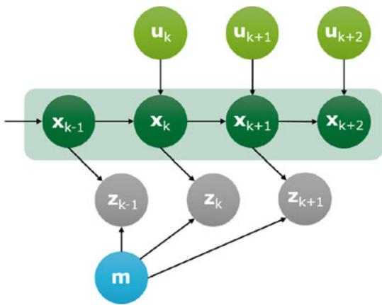
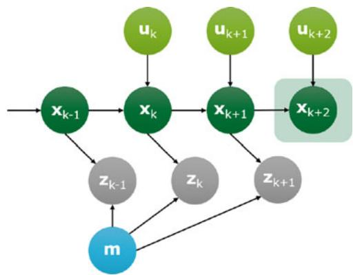
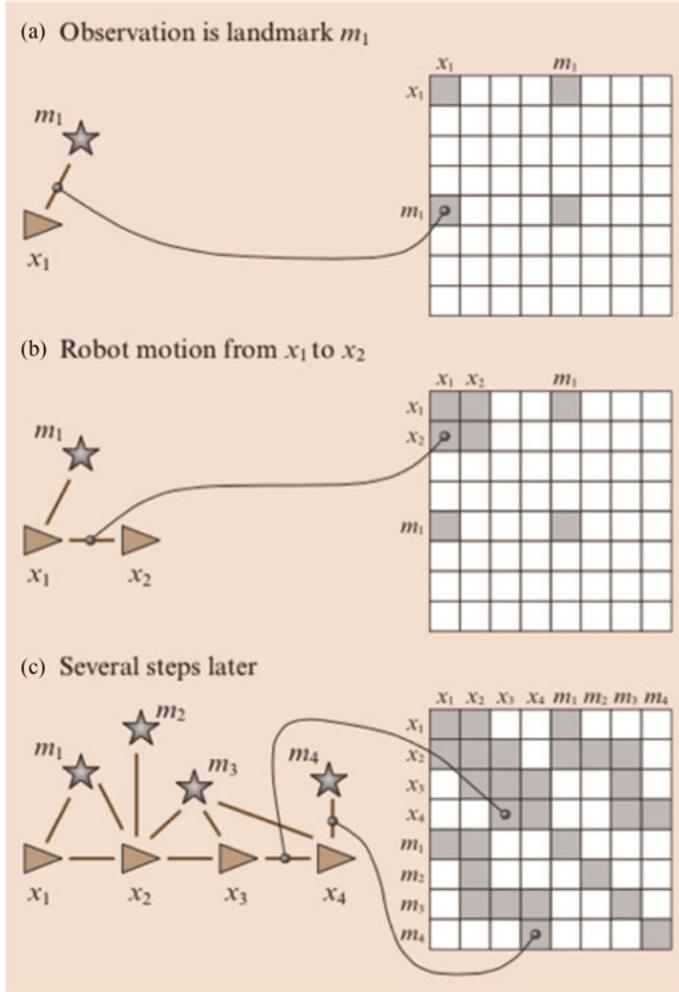
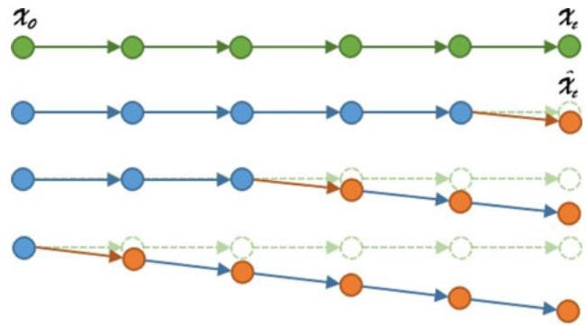
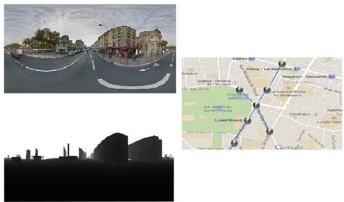
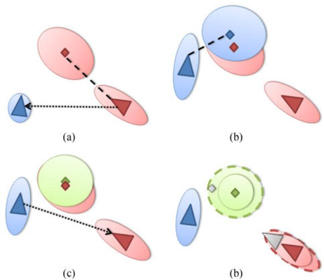
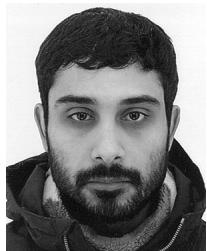

Simultaneous Localization and Mapping: A Survey of Current Trends in Autonomous Driving
Guillaume Bresson , Zayed Alsayed, Li Yu, and Sebastien Glaser ´
Abstract—In this paper, we propose a survey of the Simultaneous Localization And Mapping (SLAM) field when considering the recent evolution of autonomous driving. The growing interest regarding self-driving cars has given new directions to localization and mapping techniques. In this survey, we give an overview of the different branches of SLAM before going into the details of specific trends that are of interest when considered with autonomous applications in mind. We first present the limits of classical approaches for autonomous driving and discuss the criteria that are essential for this kind of application. We then review the methods where the identified challenges are tackled. We mostly focus on approaches building and reusing long-term maps in various conditions (weather, season, etc.). We also go through the emerging domain of multivehicle SLAM and its link with self-driving cars. We survey the different paradigms of that field (centralized and distributed) and the existing solutions. Finally, we conclude by giving an overview of the various large-scale experiments that have been carried out until now and discuss the remaining challenges and future orientations.
Index Terms—Autonomous vehicle, drift, localization, mapping, multi-vehicle, place recognition, SLAM, survey.
I. INTRODUCTION
IMULTANEOUS Localization And Mapping (SLAM) has S been a hugely popular topic among the mobile robotics community for more than 25 years now. The success of this field is tightly bound to the fact that “solving” the SLAM problem, that is localizing a robot thanks to a map of the surroundings built incrementally, has numerous applications ranging from spatial exploration to autonomous driving. The recent spotlight put on intelligent vehicles has pushed further the research effort with the contribution of car manufacturers.
One could think of GNSS (Global Navigation Satellite System) as a solution to this localization problem but it has quickly been showed that it was not sufficient by itself. Even though accuracy limits of classical GNSS solutions are lifted when perfectly positioned base stations are used (Real-Time Kinematic GNSS), availability remains an issue. Satellite signals are affected by atmospheric conditions that are difficult to predict. Moreover, the infrastructure can block the direct reception of signals and generate multipath interference or non-line-of-sight reception which has disastrous consequences on the provided localization. This kind of signal degradation is difficult to detect and usually causes a loss of integrity from which recovering can be tricky. These problems are more common in dense urban areas where tall buildings can mask satellites. On open roads, GNSS’s usually perform better.
Another classic approach to localization is to take advantage of the road infrastructure (road markings or roadway detection) in order to guide a vehicle in a lane. Advanced Driver-Assistance Systems (ADAS) are already integrating lane marking detection in commercialized cars. While this kind of approach mostly constrains the lateral position of a vehicle, it is sufficient for environments where the roadway is easily identifiable such as highways for instance. On the other hand, more complex environments (urban mostly, with intersections, curved roads, etc.) do not always provide enough road information to localize a vehicle. Moreover, the position accuracy needed along the longitudinal axis is more important than in straight, highway-like environments. Anyhow, redundancy is needed in order to build a safe system and ensure a consistent behavior on the road. As such, different localization means should be considered.
In a general manner, localizing a vehicle, be it in a global or a local frame, is an essential functionality to perform any other perception or planification tasks. Predicting the evolution of other obstacles on the road and choosing which maneuver is the most appropriate require to know exactly where the egovehicle is located and how it will evolve in the coming seconds. The SLAM framework gives an answer to this problematic while still being general enough to allow the use of any sensor or estimation technique that suits the prerequisite of estimating both the localization of the vehicle and the map at the same time. The map is of prime interest when autonomous driving is considered as a whole as it offers a first level of perception that is needed in order to make appropriate decisions.
The SLAM problem is considered as one of the keys towards truly autonomous robots, and as such is an essential aspect of self-driving cars. However, many issues are still preventing the use of SLAM algorithms with vehicles that should be able to drive for hundreds of kilometers in very different conditions. This last statement encompasses the two main problems arising when dealing with SLAM for autonomous vehicles: localization tends to drift over time and maps are not necessarily viable in every driving condition. The former problem is well-known in the SLAM community. The local and incremental positioning estimation that is given by SLAM algorithms tends to diverge from the true trajectory as the traveled distance increases. Without prior knowledge or absolute information, it thus becomes almost impossible to ensure a proper localization for several kilometers. This leads to the second problem, namely having maps that are sufficient for the localization task no matter the conditions. The mapping aspect has gained a lot of attention lately with the objective of providing the necessary information to locate a vehicle in different seasons, weathers or traffic conditions. Many solutions have been envisaged to solve these two problems like building a map with a careful selection of distinctive information with the objective of reusing it later or taking advantage of new communication systems in order to share and enhance the maps built by other road users for instance.
SLAM is a broad field and involves many topics ranging from sensor extraction to state estimation. In this article, we propose a survey focusing on the current trends in the SLAM community regarding the emergence of the autonomous vehicle market. To be clear, throughout this paper, we will refer to SLAM as approaches that are composed of at least an odometry and a mapping module in order to cover all the techniques that are of interest for autonomous driving. We will first give a general introduction to SLAM by reviewing the most commonly used estimation techniques, discuss the different existing benchmarks and data sets and point to the relevant surveys covering aspects that are not reviewed in this article. This will be the object of Section II. Then, Section III will concern the limits of classical methods for autonomous driving and more especially the impact of the drift. The problem will first be stated and we will then focus on the solutions proposed to avoid or correct this drift and on the general reliability of the exploited information. We will end this section by discussing the criteria that should be respected for a SLAM approach to be viable for autonomous driving. Section IV will concern the techniques that tackle some of the challenges of SLAM for autonomous cars, namely building and exploiting long-term maps. A survey of the methods that take advantage of previous knowledge, coming from the SLAM algorithm itself or from another resource (Geographic Information Systems for instance), will be proposed as it is a key aspect to achieve true autonomy for self-driving cars. Section V will give an overview of multi-vehicle SLAM systems. This field offers a solution to both the problems mentioned earlier: constraining drift and enhancing maps. The different design choices of such applications will be exposed and motivated with the related state of the art. Finally, Section VI will expose the large-scale experiments that have been carried out so far with relation to the localization means used. It will serve as a basis to discuss the future orientations and the remaining challenges in Section VII.

Fig. 1. Graphical representation of the full SLAM problem
II. THE SLAM PROBLEM
Initiated by Smith and Cheeseman [1] in 1986, the SLAM topic got popular during the 1990s with many structuring works like [2] or [3]. Through the years, new methods have appeared using different sensors (camera, laser, radar, etc.), creating new data representations and consequently new types of maps. Similarly, various estimation techniques have emerged inside the SLAM field. A quick panorama has been made 10 years ago in [4] and [5]. Readers looking for an initiation to the global SLAM problem can also refer to [6] and [7] for a comprehensive introduction to the topic and to [8] for an extensive up-to-date review of the current challenges in SLAM.
SLAM methods require a wide panel of algorithms to ensure the robustness of the provided localization. As such, sensor data extraction, primitive search [9], data association [10] or map storage and updates [11] are part of the topics which concern SLAM as well. However, in this literature review, we will first focus on the main estimation methods that exist before going through the current trends in the autonomous vehicle application field.
The SLAM problem is usually formalized in a probabilistic fashion. The whole objective is to be able to estimate at the same time the state of the vehicle and the map being built. The vehicle state can be defined differently depending on the application: 2D position and orientation, 6D pose, speed, acceleration, etc. We denote the vehicle pose estimation at the time k and m the map of the environment. To estimate these variables, it is possible to take advantage of what we call control inputs and which represent an estimation of the motion between and k. They usually come from wheel encoders or any sensor able to give a first idea of the displacement. The particularity of SLAM approaches is to take into consideration measurements coming from sensor readings and denoted . They help to build and improve the map and indirectly, to estimate the vehicle pose.
The SLAM problem can be formulated in two ways. In the first one, the goal is to estimate the whole trajectory of the vehicle and the map given all the control inputs and all the measurements. A graphical representation can be seen in Fig. 1. This problem, known as full SLAM, computes the joint posterior over all the poses and the map based on the entirety of sensor data:

Fig. 2. Graphical representation of the online SLAM problem at time
The full SLAM problem can be difficult to handle in real time as the complexity of the problem grows with respect to the number of variables considered. The idea of online SLAM is to estimate the current position of the vehicle, usually based on the last sensor information. A graphical representation is shown in Fig. 2. The incremental nature of the problem can be obtained using Bayes’ rule:
The estimation techniques can be separated into two main categories: filter-based approaches and optimization-based methods. The former corresponds to iterative processes that are thus suited to online SLAM and the latter regroups methods performing batch treatments and, as such, are usually applied to solve the full SLAM problem even if this trend has changed during the last ten years.
A. Filter-Based SLAM
Filter-based methods derive from Bayesian filtering and work as two-step iterative processes. In the first step, a prediction of the vehicle and the map states is made using an evolution model and the control inputs . In the second step, the current observation, , coming from sensor data, is matched against the map in order to provide a correction of the previously predicted state. The model that put in relation the observation with the map is called an observation model. These two steps iterate and so incrementally integrate sensor data to estimate the vehicle pose and the map.
1) Extended Kalman Filter: The first branch of the filterbased methods concerns derivatives of the Kalman Filter (KF) [12]. KFs assume that data are affected by Gaussian noises which is not necessarily true in our case. At its basic form, KFs are designed to handle linear systems and while they have great convergence properties [13], [14], they are rarely used for SLAM. On the other hand, the Extended Kalman Filter (EKF) [15] is a common tool in non-linear filtering and as such in SLAM. The EKF adds a linearization step for non-linear models. The linearization is performed around the current estimate by a first order Taylor expansion. The optimality of the EKF has been demonstrated as long as the linearization is made around the true value of the state vector. In practice, it is the value to estimate and is thus not available. This can cause consistency issues: the true value can be outside of the estimated uncertainty [16], [17].
However, estimates are most of the time sufficiently close to the truth to allow the use of the EKF. Sensors like laser scanners for instance, that provide a range information, are particularly adapted [18], [19]. Sonars were among the first EKF SLAM approaches for underwater applications [20], [21]. Both sensors have been combined in an EKF SLAM approach in [22]. A coupling of vision and laser has also been proposed in [23]. Monocular approaches have also largely been studied. In [24], the landmarks composing the map are inserted in the EKF only when sufficiently accurate. In [25], a specific landmark parametrization is proposed. In [26], the authors studied the impact of the Kalman gain on an update in order to constrain linearization errors.
The continuously growing map size makes the EKF unable to support large-scale SLAM as the update time depends, in a quadratic way, on the size of the state vector. To overcome this issue, the notion of submaps has been created. Each time a map becomes too large (various criteria can be used to decide so), a new blank map replaces the old one. A higher-level map keeps track of the links between the submaps not to lose information. Among the first submap-based approaches, we can cite [27] with the Constrained Relative Submap Filter where submaps are decorrelated from one another but where loop closure (drift correction based on the recognition of a previously visited place) is difficult to perform. The constant-time SLAM [28] and the Network Coupled Features Maps [29] work in a similar fashion except that landmarks common between submaps are kept to ease the change from one to another but these methods ignore correlated data. The Atlas framework [30] takes advantage of a graph structure where nodes are submaps and vertices the transformation between two submaps. Loop closures can only be applied offline. Estrada et al. solve this problem by maintaining two high-level maps [31] but still use landmarks in multiple submaps. Conditionally independent submaps were proposed in [32] as a solution to this issue. The idea is to marginalize the information that is not common to two submaps in order to make them independent given the common part. A different approach is chosen in [33]. A divide and conquer method is proposed to join the local maps created so as to recover an exact global map. New criteria to decide when to create submaps have also been proposed like the number of simultaneously observable landmarks in [34] or the correlation between landmarks in [35]. An alternative to submaps, the Compressed EKF SLAM, has been presented in [19]. In this work, the state vector is divided into an active (and updated) part and another one which is compressed into a light auxiliary coefficient matrix.
2) Unscented Kalman Filter: To compensate the weaknesses of the EKF with highly non-linear systems, Julier et al. introduced the Unscented Kalman Filter (UKF) [36] which avoids the computation of the Jacobians. The idea is to sample particles, called sigma points, which are pondered around the expected value thanks to a likelihood function. These sigma points are then passed to the non-linear function and the estimate is recomputed. The major drawback of this method is its computational time. Most of the works using the UKF took place at the beginning of the 2000s [37], [38]. A real-time application to a monocular context has been demonstrated in [39].
3) Information Filter: Another variant of the Kalman Filter is the Information Filter (IF) [40] which is the inverse form of the Kalman Filter. Its particularity is to define the information matrix as the inverse of the covariance matrix. One main advantage is that the update step becomes additive and is not dependent on the order in which the observations are integrated [41]. It is also possible to make the information matrix sparser by breaking the weak links between data [42] which ensures a near constant-time update [43]. The IF is not as popular as the EKF in mono-vehicle SLAM despite some applications in [44]–[46] because it is necessary to convert every measure in its inverse form which can be costly. However, the IF has been more exploited for multi-vehicle SLAM (see Section V).
4) Particle Filter: The second major branch in filtering SLAM algorithms is based on Particle Filters (PF). Their principle is the following: the state is sampled with a set of particles according to its probability density. Then, as with every filter, a prediction of the displacement of each particle is accomplished and an update, depending on the observation, is performed. In the update phase, particles are weighted according to their likelihood regarding the measures. The most likely particles are kept, the others are eliminated and new ones are generated [3]. The direct application of this method to the SLAM is difficult to tract because it requires a set of particles per landmark. Variations of PFs have then appeared, like the Distributed Particle approaches DP-SLAM [47] and DP-SLAM 2.0 [48] which proposed to use a minimal ancestry tree as a data storage structure. It enables fast updates by guiding the PF while reducing the number of iterations of the latter. However, the most famous PF algorithm is FastSLAM [49] which has been greatly influenced by previous works [50], [51] on the subject. Each landmark is estimated with an EKF and particles are only used for the trajectory. FastSLAM has been applied in real-time in [52]. The major advantage of PFs is that they do not require a Gaussian noise assumption and can accommodate with any distribution. Nevertheless, PFs also suffer from long-term inconsistency [53]. In [54], this problem was tackled by combining FastSLAM to an IF but the result is computationally heavy. In [55], FastSLAM was applied to laser data where the matching gives an odometry measure which is then used to weight particles in the resampling phase. Still regarding FastSLAM, its Bayesian foundations were extended to the Transferable Belief Model framework (TBM) in [56] thus allowing the representation of conflict in the employed grid map.
Filter-based approaches tend to now rely on 3D points when it comes to vision sensors [24] and 2D occupancy grids with laser data. The latter, introduced in [57] and [58], are particularly suited to SLAM as the discretization of the space due to the grid itself allows for a finite number of position candidates to test during the update step. Landmark uncertainties are represented by the occupancy probability of the cell which makes updates on map parts possible. During the update step, the classical approach is to maximize the similarity between the measurement and the map like in [59] in the Bayes formalism or in [60] in the TBM context. Not mentioned yet, the use of RADARs for SLAM has been demonstrated with filter-based approaches in [61]–[63]. However, their use remains limited in large-scale experiments due to the noisy nature of the signal. They are usually employed for obstacle detection.
B. Optimization-Based SLAM
Optimization-oriented SLAM approaches generally consist of two subsystems, as in filter-based SLAM. The first one identifies the constraints of the problem based on sensor data by finding a correspondence between new observations and the map. The second subsystem computes or refines the vehicle pose (and past poses) and the map given the constraints so as to have a coherent whole. As for filters, we can divide these methods into two main branches: bundle adjustment and graph SLAM.
1) Bundle Adjustment: Bundle adjustment is a vision technique that jointly optimizes a 3D structure and the camera parameters (pose). Most of the early works focused on 3D reconstruction [64] but it has since then been applied to SLAM. The main idea is to optimize, usually using the Levenberg-Marquardt algorithm [65], an objective function. The latter minimizes the reprojection error (distance between observations in the image and reprojected past features) giving the best camera and landmark positions. However, the core bundle adjustment algorithm can be computationally heavy as it considers all the variables at once to optimize over.
Since then, many approaches have been proposed to perform local optimizations. In [66], [67], a hierarchical method working on smaller chunks is presented. The partial 3D models obtained are then merged in a hierarchical fashion. To reduce the complexity, two virtual key frames are chosen or created among all the frames to represent a given portion. This lessens the number of variables to optimize. A similar method has been applied to autonomous driving in [68] with accurate localization results but an offline map building.
In [69], an incremental method optimizing only over the new information is proposed. In the worst case, it is equivalent to a full bundle adjustment. In [70], the authors use a sliding window over key frames triplets to locally minimize the reprojection errors. Points common between two views are considered in the optimization phase. The principle of a triplet of images is common in the bundle adjustment community. As with every optimization technique, bundle adjustment works well when a good rough estimate is given. In that sense it is important to filter outliers. Nister´ et al. [71] proposed a selection method based on a preemptive RANSAC [72]. Even though it allows for a realtime application (13 Hz), results are less accurate than in [68]. A local bundle adjustment has been proposed in [11]. The objective is to locally optimize the last n camera positions based on the 2D reprojections of the points in the last N frames These parameters can be tuned to obtain a real-time approach with good results. An integration of inertial measures has been proposed in [73]. A bi-objective function (vision and inertial objective functions) is weighed with coefficients set thanks to a machine learning approach. Another alternative is to optimize only a set of frames in order to solve loop closing problems. This is the idea presented in [74] where the authors keep skeleton frames and marginalize out most of the features and frames in the process. This method is very close to graph SLAM techniques.

Fig. 3. Transition graph and associated constraints [75].
2) Graph SLAM: The graphical representation of Bayesian SLAM (see Fig. 2) is particularly well adapted to a resolution via optimization methods. An example, coming from [75], is shown in Fig. 3. Based on this graphical representation, a matrix describing the relationships between landmarks and vehicle poses can easily be built and used in an optimization framework.
Many localization problems can be modeled using a graph representation and solved by finding the minimum of a cost function that follows this form:
where x is the vector containing the different vehicle poses, m is the map, is the error function which computes the distance between the prediction and the observation and is the associated information matrix.
The optimal values and can be obtained through optimization:
The minimization of the, in general, non-linear function is usually simplified by a local approximation using popular methods such as Gauss-Newton, Levenberg-Marquardt, Gauss-Seidel relaxation or gradient descent. These methods can either work by optimizing the whole trajectory or with small displacement increments for a real-time use. Similarly to filtering approaches, the success of the minimization depends on the initialization.
The TORO algorithm [76] applies a stochastic gradient descent variant with a novel node parametrization in the graph. This parametrization takes the form of a tree structure that defines and updates local regions at each iteration. A different idea is to consider not a Euclidean space but a manifold. It is the basis of the algorithm HOG-MAN [77] where a hierarchical optimization on the manifold is proposed. The lowest level represents the original data while the highest levels capture the structural information of the environment. In , a similar representation is adopted. uses the structure of the Hessian matrix to reduce the complexity of the system to optimize. COP-SLAM [79] optimizes a pose graph. The latter considers the displacement and the associated uncertainty to build a chain of poses. In a different approach, TreeMap [80] exploits a tree structure for the map and makes topological groups oflandmarks so as to make the information matrix sparser and so quicken the processing ( (log n) for n landmarks). Even though not exploiting a graph structure, iSAM (incremental Smoothing And Mapping) [81], [82] simplifies the information matrix to speed up the underlying optimization. Here, the objective is the QR factorization of this sparse information matrix.
The comparison of filter-based techniques and optimization approaches for a SLAM application is difficult as they are usually considered in different scopes. This comparison effort has been proposed in [83] and then extended in [84] for monocular approaches. The outcome is that optimization tends to give better results than filters which are more subject to linearization issues. However, the authors conclude that “filter-based SLAM frameworks might be beneficial if a small processing budget is available, but that BA optimization is superior elsewhere that with limited resources” [83].
C. Relevant Surveys and Existing Data Sets
As SLAM is a central topic of both mobile robotics and now autonomous driving, it continues to draw the attention of many researchers. In this section, we direct the readers towards recent survey articles that cover aspects not treated here. We also describe the different existing data sets that serve to benchmark current approaches.
As mentioned before, a good introduction to the field is given in [4] and [5] with an overview of the different aspects involved by SLAM. In [85], a brief survey of the most common filterbased estimation techniques is given with a list of the pros and cons of each main paradigm. An interesting take on the SLAM is offered by Dissanayake et al. in [86], and extended in [87], where the observability of SLAM, its convergence properties, its consistency as well as its computational efficiency are discussed. In [7], three estimation techniques are reviewed: EKF-SLAM, PF-SLAM and graph-based SLAM. Recent SLAM works that use vision are also reviewed. A specific focus is given to indoor SLAM and RGB-D cameras. There is a strong interest of the community towards vision-based SLAM due to the cost of the sensor and its information richness. Some of the works are reviewed in [88]. In [89] and [90], the authors cover the topic of Visual Odometry (VO) where the focus is on the localization (and the trajectory) and not on the map. Visual SLAM is also at the heart of [91] where feature selection, matching and map representation are addressed. Recently, Ros et al. in [92], present the challenges of Visual SLAM for driverless cars: building long-life maps, how to share maps between vehicles and the necessity to work on high-level features to ease recognition. A very complete survey on visual place recognition has also been published lately [93]. The authors go through the different modules that are essential in this field: image processing (descriptors, etc.), maps (representation) and the estimation part called belief generation. While this survey will also explore place recognition as it is an important aspect of SLAM, we will focus on its application to autonomous vehicle and on the maturity of existing approaches. Already mentioned before is the considerable work of Cadena et al. in [8] where the SLAM topic is reviewed as a whole. Some aspects, not necessarily applicable yet in autonomous driving, will not be covered here (active SLAM, for instance). Once again, we will insist on the key topics with regards to self-driving cars and the experimental results of current state-of-the-art approaches. Finally, in [94], the authors review multiple-robot SLAM approaches with a description of the underlying mathematical formulation. In our dedicated section, we will complete this survey with cloud-based approaches and also give some insights about the current results in this field and the expected future directions in autonomous driving.
A strong effort has been made lately to provide data sets which can serve to benchmark the different SLAM algorithms. The Rawseeds project was among the first to propose a benchmarking tool [95] with outdoor and indoor data sets with ground truth. In a similar fashion, the New College data set [96] is a 2.2 km trajectory in outdoor environment with cameras and lasers. The most famous is the KITTI database [97] with various data sets acquired from a car in urban and peri-urban environments. Its popularity is linked to the variety of the data sets (the vehicle is equipped with stereo cameras and a 3D laser scanner) as well as to the evaluation possibility offered by the website. It is the main tool to evaluate the positioning accuracy (translation and rotation errors) of SLAM algorithms at the moment. Table I offers a summary of the different available data sets based on the comparison table proposed by [98].
We will now present the limits of SLAM approaches with regard to autonomous driving by analyzing the top-ranked methods on KITTI and then discuss how these limits can be mitigated.
III. LIMITS OF CLASSICAL APPROACHES FORAUTONOMOUS DRIVING
A. Problem Identification
The KITTI database provides an interesting vector to evaluate the current state of odometry/SLAM algorithms for autonomous driving as the furnished data sets were carried out with an equipped vehicle mostly on urban and peri-urban roads, where these kinds of approaches are expected to be the most efficient. The top-ranked localization method on KITTI’s odometry data set is V-LOAM [105] which combines visual odometry for motion estimation with a slower 3D laser odometry. The 3D laser is used to create a depth map of the visual features and also to extract geometric feature points (edge points and planar points) that are matched with the previous 3D scan. The obtained transformation serves for the initialization of an ICP matching with the map. This approach is able to reach a 0.68% translation error and a 0.0016 deg m−1 rotation error on the KITTI benchmark. The best stereo approach on KITTI is a visual odometry named SOFT [106]. This algorithm is based on a careful feature selection and tracking. Corner-like features are extracted in both images. Correspondences are sought through SAD (Sum of Absolute Differences) over small windows. These features must be matched in two consecutive images to be viable. A Normalized Cross Correlation (NCC) test is performed to remove the last outliers. The frame-to-frame motion is estimated separately for rotation and translation with different algorithms. A similar focus is chosen in [107]. An outlier removal scheme, based on an analysis of landmark reprojection errors, serves to define a criterion to reject outliers. Another interesting approach is described in [108]. The authors use state-of-the-art monocular techniques but applied to a stereo system. This again implies a strong focus on inliers identification and tracking. The performance of these visual methods reaches around 1% for the translation error and a rotation error below 0.003 deg.m−1 .
These four approaches are among the better ranked on KITTI. Even though the results are impressive, the drift that affects them makes their use over long distances impossible. For example, a 1% translation drift alone (without rotation error) implies that after 100 meters, the vehicle is one meter away from its real, absolute localization. Ways to constrain, correct or avoid this long-term drift must thus be taken into consideration. The large-scale environments involved by autonomous driving are an important concern as a decimetric accuracy must be maintained during several kilometers (a twenty-centimeter accuracy is often recommended [109]). It is thus of vital importance to find a solution, be it under the form of absolute constraints or by studying how the drift occurs and can be modeled.
It clearly appears that the non-linearity of the models used in SLAM algorithms (vehicle models and observation models), which is for the major part induced by rotations (see Fig. 4 for an example), has a strong impact on the divergence ofa localization. However, it is important to mention that convergence properties have been demonstrated in a linear case [14] for SLAM, the use of Kalman Filters in this field being a good example.
TABLE I
SUMMARY OF EXISTING OPEN DATA SETS (GT STANDS FOR GROUND TRUTH) BASED ON [98]
| Data set | Year | GPS | GT | IMU | Laser scanners | Images | Path length |
| Rawseeds [95] | 2006 | √ | √ | 1 | 2 horizontal (front: up to 100 m/rear: up to 30 m): 180°/0.25°@ 18 Hz 2 horizontal towards the ground (front/rear: up to 4 m): 240°/0.36°@ 10 Hz | Front: color 320 × 240@29.95 fps Omni.: b/w 640 × 64@ 15 fps Trino.: b/w 640 × 480@15 fps | Indoor: 0.89 km Outdoor: 1.9 km |
| New College and Oxford city | 2008 | √ | x | x | x | Mono: color 640 × 480@ ~1 fps | College: 2 km City: 28 km |
| center [99] New College [96] | 2009 | √ | x | √ | 2 vertical (left/right): 90°/0.5°@75 Hz | Stereo: b/w 512 × 384@20 fps Ladybug: 5 × (color 384 × 512@5 fps) | 2.2 km |
| Málaga data set [100] | 2009 | √ | 小 | √ | 1 horizontal tilting (front: up to 80 m): 180°/0.5°@37 Hz 2 horizontal (sides: up to 32 m): 180°/0.5°@37Hz 2 horizontal (front/rear: up to 30 m): 270°/0.25°@40Hz | Stereo: color 1024 × 768@7.5 fps | 6 km |
| MIT DARPA [101] | 2010 | √ | √ | √ | 7 horizontal (around the vehicle: up to 80 m):180°/0.25°@18 Hz 5 horizontal towards the ground (front: up to 80 m):180°/0.25°@18 Hz 13D 64-layer (up to 120 m):360°/0.09°/0.4°@10 Hz | Mono.: 4 × (color 376 × 240@10 fps) Mono.: color 752× 480@22.8 fps | 90 km |
| The Marulan data sets [102] | 2010 | √ | √ | √ | 1 horizontal (front: up to 80 m): 180°/0.25°@18Hz 1 vertical (front: up to 80 m): 180°/0.25°@18 Hz 2 horizontal towards the ground (front: up to 80 m): 180°/0.25° @18 Hz | Mono.: b/w 1360 × 1024@ 10 fps | ~1 km |
| Karlsruhe sequences [103] | 2011 | 小 | √ | √ | x | Stereo: b/w 1344 × 391 @ 10 fps | 6.9 km |
| Ford Campus [104] | 2011 | √ | √ | √ | 1 3D 64-layer (up to 120 m): 360°/0.09°/0.4°@10 Hz | Omni.: color 1600 × 600@8 fps | ~6 km |
| KITTI [97] | 2012 | √ | √ | √ | 1 3D 64-layer (up to 120 m): 360°/0.09°/0.4°@10 Hz | Stereo: b/w 1392 × 512@ 10 fps Stereo: color 1392 × 512@ 10 fps | ~50 km |
| Málaga Urban data set [98] | 2014 | √ | x | √ | 2 horizontal (front: up to 80 m): 180°/0.25°@18 Hz 2 vertical (sides: up to 30 m): 270°/0.25°@40 Hz 1 horizontal towards the ground (front: up to 30 m): 270°/0.25°@40 Hz | Stereo: color 1024 × 768@20 fps | 36.8 km |
Laser information includes field-of-view/horizontal resolution/vertical resolution. Ticks indicate the presence of a sensor. Crosses indicate its absence.
Regarding filtering methods, the divergence problem of the EKF SLAM has been stated numerous times. In [17], the authors show that the filter tends to give biased estimates when the linearization is performed far from the true value. It means that the uncertainty associated to the state (vehicle or map) is too small: the estimate is said to be inconsistent, the true value being out of the estimated uncertainty. The localization drifts progressively, the filter calculating a biased vehicle pose and map [110]. Non-linear models are not the only source of drift. Julier et al. in [16] add that the ignored correlation between data also provokes the divergence. Kalman Filters produce optimistic results, which means that they consider that a piece of data coming from a sensor is entirely new and so temporally decorrelated from the rest (white noise assumption) which is not the case and so contributes to the inconsistency.
The problems raised in this last paragraph also apply to optimization methods when they work in a local environment, which is a necessary condition for real-time estimation. The previously cited optimization-SLAM works also clearly show the importance of the rotation in that drift. It has been observed by multiple authors [111]. It has also been shown experimentally in [112] and [113]. In [114], the authors show that the 2D formulation of the SLAM problem is not convex and as such has local minima in which the optimization can be trapped. However, without including the rotation error, the problem is close to a quadratic function and thus becomes convex.
Many practical causes also affect the behavior of SLAM algorithms. For instance, the presence of dynamic obstacles when a static world assumption is a prerequisite is a factor. A low number of landmarks or the absence of sufficiently salient features in the scene can also induce wrong associations and so a divergence of the system. Of course, the accuracy of the models used with regard to noisy real sensor data is another factor that can have a strong impact on the integrity of the computed localization. Most of the works directly addressing this inconsistency problem tend to find ways to locally avoid or reduce the drift.

Fig. 4. Impact of an angular drift. In green, the ground truth of trajectory is picture. Below, example of an angular drift (orange arrow) occurring at different times on the estimation of the position.
B. Avoiding or Reducing the Impact of Drift
The first possibility to avoid, or at least reduce, the divergence is to divide the map in submaps [31]. These approaches, presented before, break the global map in submaps where each one has its own reference frame. By doing so, the drift can be avoided at a local level by allowing only short trajectories per submap. The size of a submap must thus be calibrated and becomes a compromise between reducing the drift and dealing with the induced information loss. However, even with an appropriate size (see [35] for instance), there is no guarantee that the localization consistency will be preserved. Indeed, each measure contributes to make the system inconsistent and this phenomenon can occur even with a few pieces of data. Moreover, even if the divergence is avoided in the submaps, it is not the case in the global map that keeps track of how the submaps are connected. It is thus more of a local solution to the problem.
In a similar fashion, robot-centered approaches greatly reduce the divergence [115]. Instead of having a fixed world frame, the estimates are always given with relation to the vehicle position. Inconsistency problems are less frequent because they do not accumulate like it is usually the case. The estimation in this frame allows for a better consistency than in classical EKF SLAM [116]. Nevertheless, as with submaps, the divergence is not entirely resolved as landmarks can diverge with only several measures. A few SLAM approaches have used a robot-centered frame with success [117], [118]. Landmarks are forgotten as soon as they are not visible which relates these methods to visual odometry and is as such totally appropriate.
Other practical causes can create drift and inconsistency such as the presence of mobile obstacles when a static world is expected. This problem has been tackled in SLAMMOT (Mobile Object Tracking) or SLAM-DATMO (Detection And Tracking of Moving Objects) approaches [119]–[121]. The idea is to take advantage of the map building process to directly detect and track obstacles by analyzing observations which are not coherent with the vehicle displacement. Alternatively, credibilist approaches [60], which represent ambiguous information, can indirectly deal with dynamic obstacles. They do not detect or track these obstacles but instead treat them as conflicts which allows the algorithm to affect a very low weight to these observations when estimating the vehicle displacement.
More generally, the quality and number of selected landmarks in the SLAM process have a clear impact on how the system behaves. Ambiguities can cause matching errors and so the inconsistency of the produced estimates. Related to this problematic, Fault Detection and Isolation (FDI) systems propose to exploit information redundancy to measure the coherence of different sources (sensors, models, etc.) and detect errors or failures of one of the sources. By doing so, it becomes possible to know if the system is in a situation prone to errors and so reject spurious measures to avoid drift. In [122], the authors propose to analyze the residuals of a bank of Kalman Filters using thresholds to determine if one filter is diverging. A similar approach is described in [123] but the decision part is given to a Neural Network. Sundvall and Jensfelt, in [124], add a coherence measure between different estimations. In [125], Fault Detection is applied to GPS using the Normalized Innovation Squared (NIS) test. Neural Networks are used in [126] to detect sensor failures by making measure predictions using approximators. In [127], the authors propose a visual odometry where photometric camera calibration is taken into account in the minimization step in order to reduce the drift induced by effects like lens attenuation, gamma correction, etc. The quality of the observations is increased compared to simpler camera model.
An aspect that has often been considered to counter drift in SLAM algorithms is the use and fusion of multiple sources. Conversely to the previously described FDI methods, the idea is not to reject spurious measurements but for various sensors to compensate each other. According to Luo et al. [128], three levels of information fusion can be identified: low-level with raw data, mid-level with features and high-level with objects. In [129], the authors propose to couple laser with camera data. The fusion is done at a landmark level (laser estimation followed by camera refinement). In [130], camera, laser and GPS are fused based on information coherency. Already discussed before, the method described in [105] combines vision and 3D laser data to produce a low-drift algorithm. However, even if coupling information can benefit the accuracy and consistency of an algorithm, it does not ensure that it will not drift. It only partially corrects the drift induced by one sensor.
Even if these methods have been proven to reduce or partially avoid the drift, it does not allow for a drift-free estimation during long periods of time. Correcting the drift in a reliable manner involves that constraints about where a vehicle is with relation to a previously known, local or absolute, reference should be regularly taken into account.
C. Evaluation Criteria for SLAM in Autonomous Driving
While the previously described approaches can be successfully applied for autonomous indoor mobile robots with a dedicated exploration scheme, it is not sufficient for the large-scale environments of the autonomous driving setting. It means that it is necessary to rely on previous knowledge (absolute or local information) or to be able to improve the built map over time until it is accurate enough (loop closing, for instance). As such, the mapping aspect is central in self-driving vehicles and raises important challenges about how to build or use compact, relevant, reliable and evolutive maps.
We have identified 6 criteria that we think must be fulfilled by a SLAM approach to be viable for autonomous driving. They are described below:
1) Accuracy: refers to how accurate the vehicle localization is, be it in world coordinates or with relation to an existing map. Ideally, the accuracy should be below a threshold (usually around 20 centimeters [109]) at all times. Of course, in straight lines, the longitudinal localization can be less accurate without major consequences.
2) Scalability: refers to the capacity of the vehicle to handle large-scale autonomous driving. The SLAM algorithm should be able to work in constant time and with a constant memory usage. It implies the use of a map manager to load data when needed. The second aspect is that the map built and/or used has to be light (or stored on a distant server and retrieved on the fly) so as for the approach to be easily generalizable over long distances.
3) Availability: refers to the immediate possibility for a SLAM algorithm to provide an adequate localization that could be used right away for autonomous driving if sufficiently accurate. In other words, no first passage of the algorithm is needed to build a map of the environment and it implies that the approach is able to leverage existing map resources (or integrate absolute information more generally). This criterion is particularly important not to restrain where a self-driving vehicle can operate (a world-wide mapping process is costly and requires dedicated means).
4) Recovery: refers to the ability to localize the vehicle inside a large-scale map. Initially, the vehicle does not know where it is and a dedicated process is, most of the time, needed to have a rough idea of its position in a map. It is also a way to recover from a failure (kidnapped robot problem).
5) Updatability: refers to the identification of permanent changes between the map and the current observation. It also includes the update policy that is needed to integrate these lasting changes and not the temporary ones. Long-term autonomous driving requires the automation of map updates.
6) Dynamicity: refers to how the SLAM approach is able to handle dynamic environments and changes. This includes dynamic obstacles that can distort the localization estimation. It also integrates weather conditions that can vary as well as seasonal changes (trees losing leaves, etc.). One of the challenges of long-term SLAM is to find sufficiently discriminative features or methods in order to be robust against those changes.
We will now go through existing methods for both single and multi-vehicle SLAM and compare them with regard to the previously defined criteria so as to have a panorama on the maturity of SLAM approaches for autonomous driving.
IV. SINGLE-VEHICLE SLAM
All the challenges that appear from the criteria detailed above point at the necessity to build better maps and so at environment representation and recognition both at a metric and topological level. To cover this broad topic, we divide the works in three categories which reflect how the SLAM community usually considers their contributions. The first one concerns loop closure (recognizing a previously mapped place) which is an essential part of SLAM as it allows correcting maps and making them coherent. An interesting aspect is that these algorithms are usually applicable to relocalize a vehicle inside its environment and so provide an answer to the recovery criterion. The second category deals with the localization inside a previously built map. As previously discussed, it is a direct way to constrain the drift. Theoretically, every SLAM approach could be reusing its map but we will focus here on the articles that explicitly do so and on those which address the long-term challenges of reusing maps. A third part focuses on localization approaches that leverage existing data so as to avoid the first passage of a specifically equipped vehicle. For each part of this section, we will provide a synthesis of the discussed approaches, how they respond to the previously established criteria and briefly discuss the remaining challenges.
A. Relocalization and Loop Closure
Recognizing a previously mapped place, and thus reducing the drift induced by SLAM algorithms, is considered as an essential part of SLAM. The main difficulty comes from the fact that the estimation process is inconsistent and cannot be trusted to find those loops. It means that, most of the time, this problem is solved by a dedicated algorithm that runs at all times, independently from the estimation process. This dedicated algorithm is also often used to relocalize the vehicle inside a previously built map (kidnapped robot problem) which is of prime interest when considering autonomous vehicles.
Most of the approaches use cameras to find loops because of the richness of the visual information. Williams et al. [131] have identified 3 categories in which these algorithms can be separated:
1) Image-to-image methods [132]
2) Map-to-map methods [133]
3) Image-to-map methods [134]
1) Image-to-Image Methods: In image-to-image methods, the loop detection takes place in the sensor space. Bag-of-words approaches based on visual clues [132], [135] belong to this category. The idea is to build a dictionary where each word represents similar descriptors. SIFT [136] is often used to find descriptors and compare them due to its good robustness to scale, rotation or viewpoint changes in images. Many visual descriptors can be considered in a redundant fashion (SURF, CenSurE, etc.) so as to have the largest database possible and a representative dictionary. Once the latter is built, it can be used to check if some images can be described with the same words and thus be qualified as representing the same place.
Algorithms like FAB-MAP (Fast Appearance Based Map) [99] (and its extension FAB-MAP 2.0 [137]) and PIRF-Nav (Position Invariant Robust Feature Navigation) [138] are two examples of SLAM solutions based on landmark appearance for loop closures. In the first one, information having a strong dependency is extracted so as to avoid false recognitions which often affect loop closing algorithms. The approach has been evaluated on a 1000-km outdoor data set and shows that, using a dictionary built offline, the algorithm can provide proper topological loop closures and make maps more coherent (the gain in accuracy is not evaluated). In [138], the objective is the same but features allowing to be robust against dynamic changes are favored (PIRF). A major difference with FAB-MAP is that the whole process is online and incremental. However, it does not scale well (quadratic complexity for image retrieval) and as thus has not been applied to vehicles contrary to FAB-MAP.
Still to reduce the number of false positives, SeqSLAM [139] proposes to be less discriminative on single images but to analyze over sequences in order to ensure a proper matching. Results on a 22 and 8-km data sets demonstrate the ability of SeqSLAM to handle day/night matching in real time (even though the computing time scales linearly with the size of the data set) with different weather conditions under which FAB-MAP is unable to properly operate. SeqSLAM is demonstrated as a pure place recognition approach and does not apply loop closure to correct previous measurements even though it is possible. SeqSLAM has even been extended to integrate motion estimation between matching by using a graph structure representing the potential roads and a particle filter to maintain the consistency of the positioning [140]. This approach, SMART PF, shows better results than SeqSLAM. Another interesting approach is shown in [141] where the algorithm is tested to find loop closures across different seasons. To do so, the problem is also solved by using image sequences. A flow network is built (a directed graph with start and end-of-traversal nodes) and is used to formulate the image matching as a minimum cost flow problem. On the proposed data set (summer/winter matching), the approach outperforms SeqSLAM. It requires a few seconds to process each image. An evolution of this method has been presented in [142]. The authors replaced the HOG features used to represent images with a global image feature map from a Deep Convolutional Neural Networks. They are able to obtain better performances. The found loops are taken into account in a graph-based approach (g2 o [78]) with odometry constraints without giving insights about the reached accuracy. The approach runs on a GPU and is thus faster than the previous implementation (real time with a data set of 48,000 images) even though its speed still depends on the data set size.
2) Map-to-Map Methods: Map-to-map methods are solely based on information contained in the map. It is the case of the GCBB algorithm (Geometric Constraint Branch and Bound)
proposed in [143]. The principle is to define geometric constraints between landmark pairs in the map and the current observation. An association tree is established so to as to find the most likely association hypothesis that respects the geometric organization of the landmarks in the map. It has been applied successfully in [133] with a hierarchical approach in outdoor experiments even if the accuracy of the resulting map is not measured.
Li et al. in [144] and [145], proposed to merge occupancy grids by using a genetic algorithm to find the best alignment possible. A low-cost GPS is used to constrain the search space to smaller regions. Similarly to the previous example, the consistency of the map is drastically improved but its accuracy is not measured. In the case that the drift can be approximately estimated, the JCBB algorithm (Joint Compatibility Branch and Bound) [146] selects compatible landmarks according to their uncertainty.
Map-to-map methods are difficult to apply without any hint of where to look for loops as maps are either too sparse to be sufficiently distinctive (monocular SLAM for instance) or too complex for a complete exploration in real-time. In such cases, the use of a GPS, like in [145], makes sense as it allows the system to considerably reduce the exploration space.
3) Image-to-Map Methods: The last category, called imageto-map (or more generally sensor-to-map), extracts information from the sensor space and compares it directly with the map. The approach described in [134] is based on classifiers trained on the detected landmarks. The loop closing stage uses these classifiers on the image to check if there is a match. Then, a RANSAC algorithm takes the corresponding 3D positions to compute the new pose of the vehicle. Results with a single camera show that the map becomes coherent in an outdoor scenario.
Another possibility to close the loop or relocalize a vehicle is to use hierarchical techniques to speed up the processing. A low-resolution map first serves to identify a rough positioning of the vehicle which is then refined as the map resolution increases. These methods are particularly suited to occupancy grids and have been applied successfully to automated vehicles with laser sensors in [147]. In this example, a coarse-to-fine approach is used to relocalize the vehicle inside a map and not to perform loop closure. Experiments show that the method works well but that the size of the map is a crucial aspect.
4) Discussion: We have focused on how loop closure is applied in SLAM algorithms. The recent years have seen a clear focus on how to deal with seasonal or weather changes and we refer our readers to this survey [93] for a detailed view of this field, independently of loop closure.
Even it may seem like image-to-image methods are favored, recent approaches tend to couple different methods to ensure that a place has been properly recognized. As an example, an application of FAB-MAP with a visual odometry can be found in [148]. The authors rely on dense stereo mapping and use FAB-MAP to indicate loop closures. Their metric integration is done within a graph formulation and is calculated using the Iterative Closest Point (ICP) algorithm [149] between the observation and the previously built map. Even if the accuracy is not directly measured, the built map indicates a consistent mapping. In [150], a bag-of-words method is first employed to generate candidates that are then checked using Conditional Random Fields (CRF) in which a constraint ensures a geometric consistency between the landmarks. The whole approach is applied in a visual SLAM framework. In Table II, we give a brief overview of the principal methods that have been described here with relation to the autonomous driving problematic.
TABLE II
RELOCALIZATION AND LOOP CLOSURE METHODS REGARDING AUTONOMOUS DRIVING CRITERIA
| Method | Accuracy | Scalability | Availability | Recovery | Updatability | Dynamicity |
| [137] FAB-MAP 2.0 | Coherent map | Partly (1000-km experiment) | x | √ | x | Partly |
| [138] PIRF-Nav | Coherent map | x | Partly (online) | √ | x | Partly |
| [139] SeqSLAM | No loop closure | x | x | √ | x | √ |
| [140] SMART PF | No loop closure | x | x | V | x | √ |
| [142] SLAM across seasons | Coherent map | x | x | √ | x | √ |
| [133] Mapping large loops | Coherent map | √ | Partly (online) | x | x | Very partly |
| [145] Occupancy grid maps merging | Coherent map | x | Partly (online) | x | x | x |
| [134] Image-to-map | Coherent map | x | Partly (online) | √ | x | x |
| [147] Occupancy grid map SLAM | No loop closure | x | Partly (online) | √ | x | x |
Tick: criterion satisfied. Cross: criterion not satisfied.
Based on the established criteria, we can see that these approaches propose a solution to the recovery problem. However, loop closure was initially seen as a way to correct drift. While it produces more coherent maps, the articles cited here do not clearly expose the gain in accuracy. In [151], the authors explain that closing the loop can counter the drift inside the loop but that the result will always be overconfident. Another approach was proposed in [152] where errors are redistributed in a probabilistic fashion around the past trajectory when a loop is identified. It avoids the previously mentioned overconfidence problem but does not guarantee the consistency of the localization.
It also explains why the community does not necessarily focus on improving the accuracy but on addressing difficult conditions and building consistent maps. Even if the results are impressive, especially with seasonal changes and sunny/rain conditions, the approaches cited here, when considered for autonomous driving, can be seen as a better GPS but within a given zone. As such, it gives two main challenges for the future: can these approaches be generalized by using already available information (maps, images, etc.) to avoid the zone restriction? Can these methods be extended and integrated into SLAM frameworks to give very resilient approaches that could be viable for autonomous driving?
B. Localization in a Previously Built Map
The localization of a vehicle in a previously built map is tightly linked to the methods presented in the previous section about loop closing and relocalization. Indeed, the first necessary action is to globally identify where the vehicle is located in the map. Once this first step is accomplished, more classical data association algorithms can be used. If countering the drift is not entirely possible with loop closure, constraining the localization inside a given map is a viable solution for autonomous driving. However, building a map that scales well, that can be updated or that can work whatever the conditions is not a trivial task. We will go through existing methods that have showed that reusing a map is possible without or with a dedicated map building process.
1) Identical Method Between First Mapping and On-the-Fly Localization: The logical extension of any SLAM algorithm is to reuse a built map in order to constrain the localization. While it still requires a first passage, the map can be used right away and does not necessitate a dedicated offline processing. Nevertheless, not all methods have demonstrated that they are viable under such circumstances as it involves continuously building or enriching maps.
Map management is widely covered by all the approaches that involve submaps, which allows SLAM algorithms to work with a near-constant time and memory consumption [28]. However, reusing the maps is not necessarily considered in these methods. In [59], PML-SLAM is proposed to tackle these problems (map loading and unloading between RAM and hard drive based on the vehicle position, etc.) using laser scanners and occupancy grids. This approach has been proven to be viable for autonomous driving in [153] in certain areas. The map can also be continuously updated but no dedicated process handles it, meaning that temporary changes will also be integrated.
In [154], the authors describe a long-term mapping process where new measurements improve the map. The approach is based on vision and inertial sensors and uses a pose graph representation to integrate new data. Scalability over known areas is achieved thanks to the reduction of the pose graph. No control is made on whether or not an update corresponds to a permanent change. Already mentioned before, the work of McDonald et al. in [150] uses anchor nodes to link together pose graphs acquired during different sessions. This way, the produced visual SLAM maps can all be taken into account. Similarly to [154], all maps are integrated without distinction. The authors of [155] propose a monocular approach that uses a low number of landmarks and their visual patches to characterize them. Landmarks are reprojected in the image and matched thanks to their patches with Normalized Cross-Correlation [156]. Even if this approach is very resource-light, no dedicated mechanism is able to handle map portions that are no longer needed. The use of a memory of images is quite common [157]–[159]. The principle is to compare the current image with a reference database stored in memory, which can be costly and a limiting factor for a map. Data association can also be a problem in such cases. In [160], the authors propose data association graphs as a way to model and solve this problem.
Building maps that are able to evolve and follow permanent changes is a challenge that has mainly been tackled in indoor environments. The Dynamic Pose Graph [161] maintains two maps: an active and a dynamic map. The laser scan points are labeled in order to identify mobile obstacles and then both maps can be updated accordingly. The pose graph representation allows the system to remove inactive nodes and keep a more tractable representation. In [162], a visual odometry approach is coupled with a place recognition mechanism in order to stitch maps acquired at different times. Old views are deleted when they are not longer relevant allowing the system to maintain an up-to-date map even though temporary changes are integrated as well.
A 3-month outdoor experiment is proposed in [163] in which the authors introduce the concept of plastic maps as a way to integrate visual experiences over time. The idea is that the visual odometry tries to relate to a past experience. If none exists, a new one is created. Experiences can be partial along the trajectory in order to only store changes on dedicated portions and not on the whole map. The authors show through experiments that the number of required experiences tends to be bounded over time. The main advantage of this concept is that it allows the detection ofsudden and long-term changes in an unified method. Gathering all the needed experiences requires many traversals of a same road which can only be done at a world level with probe cars.
2) Dedicated Map-Building Process: The increasing capacity of computers, coupled with the fact that a first traversal is needed for autonomous driving with SLAM, has led researchers to focus on how to build the best maps possible for online exploitation.
Place recognition approaches, most of the time, fall also in this category as they require a previous passage to build specific databases that are then exploited. In [164], one SVM per feature is trained across several images. The robustness is ensured by discarding the detectors not accurate or unique enough across the neighboring images. These classifiers and their temporal connection can be seen as the map. The authors demonstrate a great reduction in localization failures but do not directly assess the accuracy of the method. The PoseNet algorithm, in [165], trains a Convolutional Network to associate images to the corresponding position and orientation. The CNN is then applied to locate an image in real-time. These approaches do localize the vehicle inside a map but do not ensure continuity in the localization service as with more classical methods.
Many approaches have also chosen to improve maps over time. In [166], the authors consider that, in the future, maps will be coming from centralizing collect services. As such, they propose a system where maps, constructed using vision by optimizing over 2D-3D associations, serve to feed a database. An offline process takes all these information to produce summary maps where all the meaningful data are contained (most seen landmarks). The localization accuracy is under 30 cm in various conditions. The problem of the scalability of such an approach is mentioned but not addressed. In [167], the authors consider an initial metric and semantic map and propose an unsupervised method to make them evolve through time in a parking context. The metric map uses a pose graph relaxation algorithm in order to take into account multiple passages. The semantic part is updated thanks to machine learning techniques. Multiple timescales are maintained in [168] in order to choose the one that best fits the current observation. A first run is performed to obtain an initial map. After that, local maps are maintained online with a short-term memory while an offline update allows the system to build more consistent global maps. Indoor experiments show that the map slowly adapts to long-term changes.
A different approach is proposed in [169] and [170] where spherical images (intensity, depth, saliency and sampling spheres) are built from several images. The main advantage of a sphere is to cover a given area and not only one position. An online registration method based on monocular inputs serves to localize the vehicle. In [171], a two-step process is proposed. During the first phase (teach), a database is built using SURF keypoints and submapping techniques. Then, the repeat phase localizes the robot according to the constructed map in order for it to follow the same path as previously. Similarly, in [172], a visual database is first built offline using a hierarchical bundle adjustment method. Then, in real-time, the vehicle localizes itself inside the map. Both approaches do not allow the system to modify the map once built. In [172] the results show an impressive accuracy (around 2 centimeters with the exact same path). However, the map remains quite heavy (around 100 Mb for a kilometer). Still related to vision, in [173], a geo-referenced visual map approach is proposed. The map is first built offline using SURF features and GPS constraints within a graph-based optimization framework. Online, the GPS is not used and only the map and stereovision are employed. The map memory is one of the problem cited by the authors (500,000 landmarks for 1 km) for an average accuracy of 30 centimeters.
A topometric localization is presented in [174]. During a first passage, a GPS is coupled with vision and range sensors to create a database of compact features (a descriptor per image and a range and standard deviation value between each image). A Bayesian filter is then used for online localization. Extensive experiments (over 4 months) have been carried out to show the resilience of the features to various conditions. The average localization error is around 1 meter. Still in a multi-sensor context, Maximally Stable Extremal Regions (MSER) [175] are extracted from both images and laser grid maps [176]. Coupled with a GPS-RTK, they serve to establish a database during a first passage. A particle filter then keeps track of the vehicle pose online. 2574 landmarks are required for 7 km for an average error below 50 centimeters. Finally, an interesting approach, first proposed in [177] then extended in [178], focuses on building high-quality road surface maps using a 3D laser. A calibration method for reflectivity values is proposed and maps are then computed using a graph approach with inertial and GPS constraints. A histogram filter is used for the online localization inside the map. Results have been demonstrated in autonomous driving for more than 6 kilometers with an accuracy of less than 10 centimeters. A map manager ensures a constant-memory usage. 10 MB are required for 1.6 km. The authors indicate that the reliance on the built map could have inappropriate consequences in complicated weather settings. Instead of a laser-built map, Napier and Newman, in [179], construct orthographic images of the road surface from a visual odometry approach. During the online localization phase, a synthetic image, based on the predicted pose, is generated and compared with the map using mutual information so as to refine the localization. The approach does not work in real time at the moment and its accuracy has not been directly assessed.
TABLE III
LOCALIZATION IN A PREVIOUSLY BUILT MAP METHODS REGARDING AUTONOMOUS DRIVING CRITERIA
| Method | Accuracy | Scalability | Availability | Recovery | Updatability | Dynamicity |
| [59] PML-SLAM | Partly (online) | √ | x | x | ||
| [154] Reduced pose graph | Indoor | Partly (not bounded) | Partly (online) | √ | Partly | x |
| [161] Dynamic Pose Graph | Indoor | Partly (not bounded) | Partly (online) | √ | Partly | Very partly |
| [163] Plastic maps | Not measured | Partly (not bounded) | Partly (online) | √ | √ | √ |
| [165] PoseNet | x | x | √ | x | Partly | |
| [166] Summary maps | Partly (not bounded) | x | √ | √ | √ | |
| [168] Multiple timescales | Indoor | Partly (manual bound) | x | √ | √ | Partly |
| [170] Sphere map | V | x | √ | x | Very partly | |
| [172] Hierarchical Bundle Adjustment | x | x | √ | x | Very partly | |
| [173] City GPS | Not always sufficient | x | x | x | x | Very partly |
| [174] Topometric localization | x | x | √ | x | √ | |
| [176] MSER map | Not always sufficient | x | x | √ | x | x |
| [178] Road surface maps | √ | x | √ | x | Very partly |
Tick: criterion satisfied. Cross: criterion not satisfied.
3) Discussion: An overview of the main approaches discussed in this section and how they fill our autonomous driving criteria is exposed in Table III.
We can see that almost all approaches propose a recovery system (except [173] where it is not mentioned) which makes sense with regard to the localization in a previously built map. Vision alone, to be sufficient, requires dense representations or a high number of landmarks. It is also worth noting that experimental conditions are not the same between all these approaches and as such one method could not be able to reach a proper accuracy in a different setting. Building long-term maps remain a difficult task and it is not always clear if always updating the map is the good strategy. We also notice that this kind of methods has the disadvantage not to limit the size of the maps (even if this effect is limited) which can be problematic in the long run. Many approaches do not propose a specific mechanism to store partial maps as the scope of the experiments do not necessarily requires it. However, the information density needed for most approaches makes a world-wide deployment difficult to envisage at the moment. Direct availability of maps is the main problem but it is worth noting that [166] mentions probe cars (multiple sensor-equipped vehicles) as a future way to reduce this problem. This will be further discussed in Section V.
From this short analysis, it appears that the problem of building life-long maps that can take into account permanent changes as well as seasons and weather in a bounded manner remains a challenge. Regarding accuracy, even though some impressive results are shown, it is difficult to predict how one map representation will work in a different environment. As there is no clear way to evaluate this, more tests in various conditions are needed. The final, bigger problem is how can the creation of these maps be generalized at a world level? At the moment, it is not clear if it will happen as world-wide raw sensor data may never be available.
C. Localization in Existing Maps
Even without world-wide raw sensor data, there exists many different sources already furnishing large-scale information. In the prospect of facilitating the deployment of autonomous vehicles, many researchers have proposed approaches to leverage these geographic information sources. In this part, we will first focus on new map (or potentially new) formats and their applications as it could drive how information are collected in the near future. Then, we will discuss localization methods that already integrate existing widely available data to build prior maps.
1) Building and Using Future Maps: In the recent years, researchers have proposed custom map formats in order to respond to the need of a prior knowledge for autonomous driving. Some have considered the practical challenges of building world-wide maps in an automatic way.
In [180], the authors propose a custom format, Emap (enhanced map), usable for a lane-level localization. Lanes are represented as a series of straight lines, circles or clothoids based on GNSS and dead reckoning measurements. This map format has been utilized in [181] in a 30-minute experiment where lane accuracy was achieved (error below 1 meter most of the time). An extension of the Route Network Definition File format (RNDF), initially specified by DARPA, is discussed in [182]. This new format, RNDFGraph, overcomes some of the limitations of the original definition by including lane relationships and lane change information. This is made possible by using a graph representation. Splines are also generated based on waypoints in order to ensure a smooth trajectory. This format has been used in German highways for path planning but not directly for localization purposes. Accurate lane-level map generation is also the objective pursued in [183]. Here, the authors combine line-segment features extracted from a 3D laser and a graph SLAM approach with an OpenStreet Map map. A particle filter is used to obtain a lane estimation that is then integrated inside the map. The authors show that they are able to reach an average accuracy of 5 cm. The map utilization inside a localization algorithm is not proposed in the article. Still regarding automatic lane-level map generation, Guo et al. in [184] (and extended in [185]) propose a low-cost approach based on an OSM map, an INS, a GPS and orthographic images generated from a camera. The idea is that such a system could be used by probe cars and could generalize the map-building process. First, the INS and GNSS measurements are optimized together to obtain the vehicle localization. A second optimization using visual odometry is performed. The image is then aligned according to local map segment extracted from OSM. The lanes are finally extracted from the orthographic image. Still centered on a path planning use, lanelets have been proposed in [186]. The format is proposed with tools to manually create maps from satellite views. This map representation has been used in [109] but dedicated maps for localization were built as well. Finally, in [187], a system based on a high precision GNSS, a 3D laser and a cameras pointing downwards is proposed to build maps. Bird eye view images are generated and localized according to the GNSS. Lane markings and curbs are then extracted from them and are manually reviewed. A localization application, Lane-Loc, is proposed where the map is reprojected in the images (no laser is used in the localization phase) using the estimated vehicle position. It eases the subsequent extraction of the lane markings and of the curbs. The localization is able to reach the map accuracy (around 10 centimeters) most of the time.
All the previously cited methods bring geometric information to, for now, topologic-only maps. As such, approaches making use of this kind of prior information might be viable in the near future. A map-aided localization is proposed in [188] that takes advantage of prior knowledge about lanes and stop lines. A vision system that detects these lanes and compares them with the map is implemented inside a particle filter that also integrates IMU and GPS measurements. This light system is able to reach a 50-cm accuracy. In [189], the authors use only road segments and integrate them inside FastSLAM. The idea of this road constrained approach is to limit the lateral deviation as well as angular errors by matching them with the expected value computed from the map. The latter is built using a Differential GPS. A lane-accuracy is reached with an average error of 1.4 m. Similarly, an accurate digital map of the lane markings is built and used in [190]. Fused with GPS and proprioceptive information, the lane detection allows the localization to be constrained to 10 centimeters along the lateral axis. However, longitudinally, the error is around 1 meter. In general, lane approaches are difficult to apply in more complex settings like intersections and roundabouts where the accuracy is an important concern.
Instead of lanes, the authors of [191] use a map containing the walls of the surroundings. A Bayesian network decides the most appropriate wall to detect using a laser scanner in order to reach a defined accuracy objective in a top-down manner. A 20-cm accuracy is attained using a precise map of the walls composing the scene. A previously-built pole database serves as a reference map in [192]. The accuracy depends on the frequency of the poles but is on average around 1 meter. In [193], the authors exploit the entire pole-like infrastructure. A map is first built using stereovision and a high-precision DGPS/INS combination. During the localization phase, stereo matching with the map, along with odometry and GPS are all integrated inside a particle filter. The accuracy is not directly measured but the authors claim a lateral accuracy of around 20 centimeters.

Fig. 5. Available information from Google: panorama, depth map and road topology (each circle indicates a panorama/depth map).
2) Leveraging Current Map Resources: An impressive amount of data has already been gathered around the world (topological maps, panoramas, etc.) and can be used to create specific maps that do not require a prior passage of a specific vehicle. However, leveraging the available resources at hand to produce high-quality maps is not easy.
A few approaches are starting to use Google Street View images (see Fig. 5) or equivalent. In [194], an aerial vehicle takes advantage of Street Views to localize itself. Artificial views are created to overcome the difference in viewpoints and are then compared using the Approximate Nearest Neighbors on extracted features. The objective is to resolve the place recognition problem in urban environment with an aerial vehicle. In [195], SIFT descriptors are extracted from Street View images and indexed in tree structures which are then browsed with a nearest-neighbor algorithm from the descriptors of the current image. A vote across the candidates is then accomplished to choose the closest image. This work has been extended in [196] with a Bayesian tracking filter in order to ensure the continuity of the localization. Even though the filter allows for a smoother trajectory, sudden jumps around the position still occur. This city-scale localization has an accuracy that ranges from more than 1 meter to 12 meters. In [197], visual bag-of-words methods are employed to build two dictionaries from Street View images using SIFT and MSER (Maximally Stable Extremal Regions) detectors so as to have both local and regional feature descriptors. Based on these, the closest Street View from a real image can be recovered. The relationships between physically close panoramas serve to speed up the matching process. For all these approaches, the difficult task is to find sufficiently discriminating features to increase the matching ratio as explained in [198]. As such, these methods share strong relationships with the new descriptors that have emerged for the urban context [199]–[201]. Another way to improve the results is to process sequences that can then be matched against the topology of the environment as proposed in [202]. A better performance is obtained by considering visual words from a query image across multiple images than just one. The authors formulate the problem as a regression on an image graph. The approach is only evaluated by matching Street Views together and according to the capacity of the algorithm to retrieve the right image.
TABLE IV
LOCALIZATION IN EXISTING MAPS (OR POTENTIAL FUTURE MAPS) METHODS REGARDING AUTONOMOUS DRIVING CRITERIA
| Method | Accuracy | Scalability | Availability | Recovery | Updatability | Dynamicity |
| [181] Emap | x | In theory | Might be available | √ | x | x |
| [187] LaneLoc | √ | In theory | Probably not | √ | x | x |
| [188] Map-aided lanes and stop lines | x | In theory | Might be available | √ | x | x |
| [189] Road constrained SLAM | x | In theory | Might be available | √ | x | x |
| [191] Top-down wall localization | √ | In theory | Probably not | √ | x | x |
| [196] City-scale localization | x | In theory | √ | Approximate | x | x |
| [203] Synthetic Street Views | x | In theory | √ | √ | x | x |
| [205] Metric localization with Street Views | x | In theory | √ | √ | x | X |
| [207] 3D traffic signs localization | Most of the time | In theory | x | √ | x | x |
| [209] Road graph localization | x | In theory | √ | √ | x | >× |
| [210] Satellite imagery matching | Not measured | In theory | √ | √ | x |
Tick: criterion satisfied. Cross: criterion not satisfied.
The mentioned approaches solve the place recognition problem inside Street Views. However, they do not manage to achieve a sufficient accuracy for autonomous driving. This issue is more difficult due to the sparse nature ofthe Street View panoramas. In [203], the authors propose to create synthetic views to improve the continuity of the matching and thus of the localization. The depth associated to Street Views is used in a 3D-to-2D matching that is injected inside an optimization framework to minimize the reprojection error. They are able to obtain an accuracy of approximately 60 cm at best. In [204], the pose estimation is performed by comparing features from the current image with the best Street Views (highest number of matching with the query image). Proper correspondences are identified by evaluating the residual of the corresponding transformation over all the matches. The pose is then estimated between the best two reference views. The accuracy of the system oscillates between less than 2 meters to 16 meters. A method with two separated modules is described in [205]. In the first one, a visual odometry algorithm is applied from feature points tracked for short periods of time. In the second one, the transformation linking these points to Street View panoramas is computed so as to obtain a global localization with an accuracy below 1.5 m. In an original approach, the authors of [206] propose a text-based geo-localization method that extracts textual contents with a camera from available shop signs. It is then compared with an annotated map built from Street View panoramas in order to estimate the pose of the camera for an average error of around 10 meters.
Other than Street View imagery, in [207], the authors show that it is possible to consider traffic signs as geo-referenced landmarks coming from existing maps. 3D models of these traffic signs are matched in images and the position ofthe vehicle is optimized inside a Bundle Adjustment approach. Results are below 0.5 m most of the time but depend on the number of traffic signs. However, the database that is used need to be quite precise and is built by a mobile mapping system. With a more traditional traffic sign database, the authors of [208] are able to reach a 5-meter accuracy by combining vision, GPS and an INS inside a Bayes filter. The structure of the road graph can also serve to roughly localize a vehicle as proposed in [209]. In this paper, a particle filter, only fed by odometric information, progressively converges toward the true location of the vehicle by matching the trajectory followed against the map. The result is an average error of 5.8 m in a large network. The authors of [210] combine a visual odometry system along with features (lane markings) extracted from satellite imagery. The aerial images are pre-processed offline using a SVM and a clustering algorithm to identify road markings. The latter are then used online to constrain the localization. The accuracy of the system is not measured but the authors show that they are able to align satellite image features with the current image.
3) Discussion: We provide a synthesis of the main approaches covered here in Table IV with relation to the established criteria.
The current state of localization methods based on existing maps show that they are not yet viable for autonomous driving. The accuracy is not sufficient or requires more precise maps that the ones currently available. An interesting observation is that even the algorithms that utilize more precise lane maps (built manually) do not reach the critical accuracy (around 20 cm [109]) for automated driving. Of course, things could evolve in the near future depending on the information available in the upcoming high-precision maps. Nevertheless, leveraging current databases is an evolving trend that can be an interesting prospect. However, even if scalability can theoretically be achieved with these methods, it will require dedicated pre-processing algorithms to transform data in the right format (for instance, creating bag of words according to zones). All of the methods depicted in Table IV are able to recover their pose inside the map, most the time using a standard GNSS which might prove to be more difficult in dense urban environments.
The main challenge for the localization methods presented in this part is how to improve the accuracy by building more relevant, accurate maps. One solution might come naturally with new world-wide sources (new maps, etc.). A key aspect remains the information density of the sources. Street Views, even though interesting, are, for now, too physically spaced to be viable alone. This is why generating synthetic data might be a possible answer. Authors tend to focus on a specific kind of data and finding a framework and an estimation method that take advantage of all the available resources at once might be an interesting prospect. Knowing in advance what will be the map elements that must be sought should also be considered in order for a vehicle to evaluate beforehand, without having directly experienced it, if, with regard to its capacity, a sufficient accuracy can be reached for autonomous driving. The approaches mentioned in this Section do not consider the update of these shared resources. While it is not a trivial task to update inaccurate maps with an approximate vehicle position, it would clearly contribute to progressively improve these maps until they are viable for autonomous driving.
V. MULTI-VEHICLE SLAM
The complexity of creating or exploiting maps for localization purposes at a world scale indicates that cooperation between vehicles might be needed in order to improve existing maps or ease the large-scale collection of data for appropriate map construction. However, doing so is not trivial as the collaboration of several vehicles has an impact on how to design an effective approach. One important initial distinction concerns how the cooperation is handled. Two systems exist: the centralized approaches and the decentralized ones. In the first case, communications are all directed towards one entity that agglomerates and fuses all data before sending the result back to the vehicles. Decentralized systems assume that each vehicle is capable of building its own decentralized map while communicating with the other vehicles of the fleet. It means that information flows must be controlled to avoid bandwidth explosions and estimation problems which typically happen in such cases (double counting a measurement, for instance). It is worth noting that this field is still fairly recent and concerns mostly mobile robotics for now. We will discuss both systems (centralized and decentralized) and how they can be applied to autonomous driving.
A. Centralized SLAM
Centralized SLAM may seem like a natural extension of single-vehicle SLAM algorithms where parts of the computation are offloaded to a distant server. However, there are many ways to share the SLAM task in a centralized approach depending on the objective. The main distinction that can be made is whether or not the centralized part should be running in real-time or in an offline manner.
1) Online Centralized SLAM: This organization makes the extension of SLAM algorithms quite immediate. One of the first works on the subject was presented by Fenwick et al. in [211]. An Extended Kalman filter is utilized to integrate the state vectors (pose and landmarks) of all the vehicles. The paper covers more the theoretical aspects and only shows simulation results. In [212], submaps are built individually by robots using cylindrical object features detected by a laser scanner. All these submaps are fused in a centralized fashion from a nearby server. The relative locations of the robots must be known. The approach is demonstrated with a very simple experiment with two robots. The work presented in [213] was the first, to our knowledge, to propose a multi-robot visual SLAM. Observations and visual descriptors are sent to a central agent which builds a map shared among all the robots. The initial positions of the vehicles must be approximately known so as to localize everyone in this common map. The estimation of the different trajectories within this unique map is performed by a Rao-Blackwellized particle filter. The approach has only been tested in simulation and the results show that the processing power needed to compute a proper map and the localization of the vehicles is not enough to meet real-time constraints.
A recent trend has moved this processing from one vehicle or close entity to the cloud in order to take advantage of the available processing power. One well-known example can be found in [214]. In this article, the authors expose a cloud framework, , which shares the workload between a cloud server and the robot. All the demanding tasks are moved to the cloud and only the part where a high frequency is required is executed on the robot. The proposed application performs all the mapping aspects of a RGB-D SLAM on a distant computer and only the tracking of the pose is done locally. Even if the approach is proposed as a cloud framework, the experiments use a desktop computer with a wireless connection. They demonstrate the abil ity of the system to perform cooperative update on the map as well as online map merging. In [215], the DAvinCi architecture is presented. Its objective is to offload all the computations on a cloud system. The software architecture enables heterogeneous agents to share and upload common data on the cloud. A gridbased FastSLAM has been adapted to fit the needs of this cloud approach. Each particle responsible for the pose estimation can be run on separated nodes. The experiments demonstrate a faster execution time for a single-vehicle FastSLAM but the authors do not consider the delays or latencies induced by these outsourced computations on a real-time approach. Rapyuta [216] is another framework designed for cloud robotics. Its use is demonstrated with a RGB-D odometry. Different settings are evaluated: a complete offloading of the computation to the cloud, a combination where only the mapping process is offloaded and a collaborative mapping by two robots. Keyframes, sent to the cloud, are compressed in order to reduce the needed bandwidth. In their experiments, the Amazon cloud service was used. The complete offloading of information requires too much bandwidth despite the compression. However, hybrid approaches, were only a part of the computations is done on the cloud, are viable. The authors do not, however, discuss the impact of the delay on the map building in these experiments.
Cloud-based robotics applications are fairly new and have a great potential to, at least, reduce the computational requirements inside autonomous vehicles in the future. Interested readers can refer to [217] for a short survey of this recent practice and to [218] for a more general review of cloud approaches in robotics.
2) Offline Centralized SLAM: The delays and latencies involved by cloud computations can prevent the use of the previously cited methods in autonomous cars. However, with the aim of easing the creation of world-wide maps, offline computations of data gathered during the day by fleet of vehicles can be a way to build consistent large-scale maps.
Offline computation of SLAM data can be seen as a natural extension of multisession SLAM algorithms. Multisession SLAM is the possibility for a SLAM algorithm to take into account several passages in overlapping areas and so to extend the map initially built. The identification of common grounds between two maps usually involves place recognition algorithms that loop closing constraints to compute more coherent maps. Approaches proposing multisession mapping are based on a graph representation which has the advantage to be flexible when it comes to adding new constraints and nodes to optimize. We refer the readers to the description of the following works in Section IV which could be utilized by several vehicles in a cloud computation: [148], [150], [154], [161], [163], [166]–[168]. While these approaches are only applied to a single-vehicle, the extension to a fleet is straightforward. In [166], the authors mention that the objective in the long-term is the deployment of such a system in probe cars that would gather data and fuse them in the cloud to then provide maps as a service. The main difficulties are the necessity to divide maps by sectors in order to be still optimizable in a reasonable time and to limit how maps can grow to avoid having intractable environment representation. The first problem has already been addressed in single-vehicle SLAM with submapping techniques and the second is still an open challenge. Finally, a practical problem is to have common representations within a set of probe cars to be able to build and exploit the same map.
The resources involved to roll out such an application make it more an industrial challenge than a research problem. This is the objective of the map creator HERE which intends to build HAD (Highly Automated Driving) maps by collecting data from probe cars. The data serve to feed different maps, which are computed offline in the cloud, for specific services. A noticeable research effort can be found in [219] where a cloud service is proposed in which data can be collected, stored and shared. Most of the previously cited cloud-based approaches are connected to this service and it could be a way to experiment large-scale multi-vehicle offline map building in the future.
B. Decentralized SLAM
The increasing connectivity capacities of the autonomous vehicle with the infrastructure (Vehicle To Infrastructure, V2I) and other cars (Vehicle To Vehicle, V2V) bring the question of how localization methods can take advantage of them. One major aspect, as with other multi-vehicle approaches, is the possibility to map new areas in a quicker way. The main difference with centralized methods is that data can directly be exchanged between vehicles without the need of a dedicated infrastructure. Vehicles could benefit from a direct communication to quickly update maps in case of sudden changes or to anticipate dynamic conditions (pre-load a map adapted to rain conditions, for instance).
However, fully decentralized SLAM is difficult to achieve as there are many new constraints that must be taken into account. As such, the closest current applications concern mobile robotics and not directly autonomous vehicles. We will thus focus on them in this section before discussing how they could be integrated inside autonomous driving applications. Interest readers can refer to [94] for a complete overview of this field.

Fig. 6. Data incest in a SLAM context. Triangles represent vehicles and diamonds, landmarks. Ellipses are the corresponding uncertainties. (a) The red landmark is mapped by the red vehicle and is then sent to the blue one. (b) The blue landmark is mapped by the blue vehicle. The red landmark is the one previously received. (c) The green landmark is the fusion between the blue and red ones by the blue vehicle and sent to the red one. (d) The grey triangle is the true pose of the red vehicle (and similarly for the landmark). Dotted ellipses are the true uncertainties. Plain ones are those estimated after the fusion of the green landmark with the red one (data incest).
The first works on that matter come from the data fusion community where a task was split between several CPUs to speed up the computations. For instance, the multi-vehicle localization algorithm proposed by Nettleton et al. in [220] is derived from the advances in decentralized data fusion presented in [221] and [222]. We will focus here on the main design difficulties of such methods: data incest, data association and communication issues before discussing the main experimental results.
1) Data Incest: One common difficulty between the applications sharing information is data incest which is responsible for inconsistency by double-counting data in the estimation process. Decentralized SLAM (or decentralized localization as a whole) is particularly prone to this phenomenon as observations and maps are shared, relayed and fused by vehicles [223], [224]. The data incest phenomenon in a SLAM context is illustrated in Fig. 6. In this example, the red vehicle receives from the blue one a fused state already integrating its own map. As it does not know it, it will fuse this landmark within its map and thus double-count its own landmark and become overconfident (inconsistent). Keeping a track of what is exchanged is a possibility with a few vehicles but does not scale well with a large fleet.
To solve this problem in a SLAM context, Nettleton et al. in [220] proposed a dedicated network architecture to avoid double-counting. Only point-to-point communications are allowed thus forcing information to go through several nodes before reaching its target. In [225], an approach where submaps are only exchanged when closed is exposed. A topological global map puts all the submaps in a common frame. The main constraint comes from the fact that submaps cannot be updated and are only sent once on the network. The work of Vidal-Calleja et al. in [226] also proposes an extension of submap SLAM, and more specifically of the hierarchical approach introduced in [31]. Only the topological map is exchanged inside the fleet and a global metric map cannot be recovered on the fly. In [227], a multi-robot graph-based SLAM is introduced. The map of each vehicle is compressed and sent to the neighbors. A data cache filters out already received information. Similarly, in [228] and [229], a consensus is sought between neighbors so as to find the best map possible that avoids double-counting information. In [113], each vehicle state (pose and map) is stored separately from the others. Each vehicle can obtain a global map by fusing all the received states with its own. In [230], the Split Covariance Intersection Filter (SCIF), initiated by Julier et al. in [231], is applied to a multi-vehicle context. This filter is based on Covariance Intersection so as to produce consistent estimates even with unknown correlations between data.
2) Data Association: Data association in a multi-vehicle context can be extremely complicated as the relative positions between the vehicles are not necessarily known and the information that can be communicated is limited by the bandwidth. Some approaches have chosen to consider that the initial distance between the vehicles is known beforehand [220], [232]. Another possibility, introduced in [233], is to define a rendezvous towards which vehicles will converge to observe themselves directly.
Among the data association algorithms specifically designed for a multi-vehicle application, we can cite [234] in which each landmark is characterized by measures (distance and angle) to other close landmarks. Similar configurations of landmarks are then sought in maps from different vehicles. In [235], landmarks are grouped by 3 and a Delaunay triangulation is applied to obtain a unique map. The perimeters and areas of these triangles are given to a RANSAC algorithm in order to find the best correspondence between two map pieces coming from two different vehicles. In [236], the authors analyze the distribution of potential multi-vehicle correspondences. Inliers are assumed to produce the same transformation between two vehicles conversely to outliers. A clustering algorithm is used to find initial candidates that can then be further analyzed with more classical methods. The works of Li et al. [144], [145] solve the initial alignment of the maps from different vehicles using a low-cost GPS and a genetic algorithm in the restrained search space
3) Communication Issues: The bandwidth needs are often neglected in decentralized SLAM. For instance, in [225], submaps are directly sent. In [237], graphs (nodes comprise raw data) are exchanged, which is only suitable for small vehicle fleets. In [238], the authors propose to exchange maps only when vehicles can detect each other, which means that big amount of data will be sent punctually. Methods communicating only topological maps, like in [226] and [227], avoid this problem by providing very light maps.
The exchange strategy should also be able to cope with potential losses and delays. When not considered, a temporary saturation or failure can lead to information definitively lost [225], [237]. The algorithms built around interactions with neighbors are usually capable of identifying and asking for missing data [227]. Another possibility, described in [239], is the Lazy BeliefPropagation which integrates observations in a Particle Filter that does not depend on the temporal order in which data are added to the filter. Thus, missing or late information can still be integrated later without a problem. However, it is necessary to be able to identify missing values. More generally, all the approaches based on the inverse form of the Kalman Filter, namely the Information Filter, handle delay natively. Indeed, the update becomes additive and does not depend on any temporal order. It has become a common choice in the multi-vehicle community [234], [240], [241].
4) Experimental Results: The experiments carried out in the previously cited articles give a clear visibility on the potential deployment of such methods for autonomous driving. Indeed, most methods are only demonstrated in simulated experiments [220], [225], [227], [235], [239], [240]. The main reason is that addressing all the issues mentioned in this section in order to conduct real data experiments can be difficult as they are not all directly connected to the estimation problem. Some approaches have been demonstrated indoor in real time [233], [242]. In [226], the authors demonstrate an air/ground cooperation in outdoor environment. The map is built in a cooperative fashion with vision landmarks. The accuracy has not been measured. In [113], outdoor experiments with two or three vehicles are performed. The method relies on the exchange of visual landmarks. The accuracy oscillates between 50 cm and a few meters depending on the capacity of the vehicle to identify common landmarks. Finally, in [145], 2 vehicles equipped with laser merge their maps together in an outdoor experiment. The method is able to reach a 3-meter error on average.
This short survey of recent results shows that we are still far from generalizing the use of decentralized SLAM for autonomous driving. However, the communication means themselves continue to improve and bandwidth limitations might be less of a problem in the coming years. Still, large-scale demonstrations of the capabilities of decentralized SLAM are yet to be proven and applying the previously described approaches to autonomous driving is one of the upcoming challenges of SLAM.
C. Discussion
This overview of multi-robot SLAM approaches has showed that the maturity of such methods for autonomous driving differs vastly depending on the way data are handled (in a centralized or decentralized fashion). Online centralized SLAM systems have been demonstrated on small-scale experiments with either a classic computer that serves as a hub to collect observations or with cloud processing. The extension from mobile robots to driverless cars raises the question of the bandwidth capacity that will be available in tomorrow’s cars but most importantly of the availability of an Internet connection in the vehicle. Completely offloading critical processing onto the cloud will probably not be safe enough. However, delegating the task of updating maps gathered from several vehicles in a reasonable amount of time is an interesting prospect. Real-time updates for map portions that might have changed could help driverless cars to adapt in a quicker way. Moreover, environmental conditions that have a low dynamicity could be alerted beforehand in order for the vehicle to anticipate by choosing more adapted features, etc. To attain this goal, large-scale experiments, involving a realistic number of vehicles, are necessary. It also means that a major prospect remains the design of software architectures able to cope with data flows and to properly segment updates. One key element to make online cloud-based methods viable is the choice of a map representation able to integrate all incoming information.
In that sense, fully decentralized methods share similar goals. The main difference comes from the fact that, by receiving the information from nearby cars, the ego-vehicle can select which information to integrate in its map. An interesting challenge thus becomes to establish criteria in order to evaluate the information gain that can bring maps coming from different vehicles with relation to the goal of the ego-vehicle (destination, energetic constraints, etc.). However, all the practical implications of decentralized methods are the first challenge to tackle. Contrary to cloud approaches, where processing power is less of a limit, the tractability of the final solution will also be an important factor to consider. Large-scale experiments are also an important milestone to reach in order to clearly exhibit the benefits of decentralized SLAM for autonomous vehicles.
Offline centralized methods might be the most mature for autonomous driving mainly because this challenge is very close to multisession SLAM. While future HAD maps may not provide all the needed information to reliably localize a vehicle in various conditions, probe cars might be a way to quickly gather enough data to build such maps. It is also an interesting perspective regarding the capacity of vehicles to detect long-term changes. Indeed, the agglomeration of different viewpoints on a situation should ease this process. Being able to limit the growth of these maps remains a blocking point. Finally, a considerable challenge is to build sufficiently robust software architectures to integrate and process all these data. The cost of such an infrastructure directs large-scale experiments with such methods towards industrial companies rather than small research teams.
VI. LARGE-SCALE EXPERIMENTS FOR AUTONOMOUS VEHICLES
During the recent years, the scope of the experiments used to validate localization algorithms has broadened with the availability of large-scale data sets. Moreover, many research teams now have a dedicated platform to test, during many kilometers, their algorithms. In this section, we give an overview of the large-scale experiments that have involved fully autonomous vehicles. We will, of course, focus on the localization algorithms and the context in which they have been used.
The first large-scale experiments took place at the beginning of the 90’s and were mostly on highways [243], [244]. In both approaches, localization was performed using lane detection with vision sensors to laterally position the vehicle on the road. Lane detection algorithms have been the default localization system in autonomous driving demonstration for a long time as it is totally appropriate in a highway context. The DARPA Grand Challenge [245] with its 244-km race across the desert changed things with a new setting. In [246], a GPS is coupled with elevation maps built using laser scanners and a road-finding algorithm in order to avoid cliffs, rocks and the like. A similar approach is chosen by the winner of the challenge [247]. The GPS is coupled with an IMU and an algorithm to detect the road. In [248], a terrain reconstruction with lasers was also used. In mostly empty territories, the use of a GPS alone was sufficient for navigation. Obstacles and the difficult terrain added the necessity to build maps that can provide a safe corridor in which vehicles could evolve.
The DARPA Urban Challenge that followed focused on urban environments with a 97-km autonomy test in a city-like traffic [249]. It has to be noted that the environment was still sufficiently open for a Differential GPS to operate properly. The reliance on maps was more important this time. The Route Network Definition File (RNDF) format was specially designed for this challenge in order to furnish the topology and geometry of the road. Junior, the vehicle proposed by Stanford [250], used a GPS and the RNDF map to position the vehicle. The accuracy was improved with a laser system performing lane and curb detection. In [251], a visual lane detection algorithm combined with the RNDF was responsible for the vehicle localization. The authors pointed out the difficulty to have a reliable localization with a vision-only system because of environmental conditions like shadows, etc. The winner of this challenge [252] combined a GPS along with an IMU and the RNDF map. Localization was improved with a laser-based lane detection. The authors mention the necessity of prior road models for an efficient localization. Semantic information is also referred to as an important point in order to disambiguate situations.
Another interesting challenge conducted in 2011 is the Grand Cooperative Driving Challenge (GCDC) [253]. The idea was to evaluate how collaboration in platooning can help to reduce congestion. The winner of the GCDC challenge in 2011 [254] used a previously built map in which received positions of the other fleet members were matched and coupled with on-board radar detection. This showed that sharing simple localization information can still benefit autonomous driving by agreeing on speed or anticipating maneuvers.
A very large-scale experiment has been conducted by the VisLab team [255] with a 13,000-km trip from Italy to China. Technical details about the embedded technologies can be found in [256]. The localization was performed using a lane keeping algorithm (stereo and monocular) and a leader following system. A laser terrain mapping algorithm was also implemented for off-road driving but not used in this experiment. The leader following is an interesting possibility for autonomous driving if vehicles agree on their destination (or at least, a part of the trip). It still implies that one vehicle should be able to have a full localization system. For instance, cars with less expensive sensors could use platooning-like formations.
Automatic guidance of a vehicle was demonstrated in [257] for the Stadpilot project. This work can be seen as an update of the results of the Urban Challenge [249]. During a 15-km experiment on open roads, a combination of DGPS, IMU and lane keeping algorithm was used. Prior digital maps were also employed. Based on their experience in DARPA, the authors clearly indicate that GPS and IMU are not sufficient for autonomous driving in urban environments. An evolution of [255] was presented in [258]. In a 13-km experiment in different environments and real traffic, VisLab demonstrated the possibility of using lane or leader following based on vision, IMU and DGPS. An interesting aspect is that a map of the environment was used to trigger the appropriate perception module.
The V-Charge project aims at providing automated valet parking with close-to-market sensors. In [259], the authors evaluate their localization approach in a real-world scenario. First, the map is built using SURF keypoints extraction from fisheye cameras. Loop closures are defined manually and the map is optimized using global Bundle Adjustment. Localization is then performed against the known map still using SURF features. The algorithm is evaluated 0, 1 and 2 months after the map creation with a sufficient accuracy. However, the authors state that map update is needed over long periods of time to reflect changes. Another open question raised here but not addressed is the map portability between different vehicles. Still in the V-Charge project, [260] completed this system with height maps built from stereovision. A semantic map and a road graph were also needed to identify parking places and how to navigate between them.
Large-scale outdoor experiments with mobile robots have also been carried out in real-world environments. In [261], a robot traveled 20 km in crowded streets. The map was built beforehand with a graph-based laser SLAM. The on-the-fly localization was based on a particle filter and a GPS for initialization. The system was able to perform reinitialization when lost. The authors indicate that mobile obstacles masking the map were a source of localization losses. In [262], a robot traveled several times at different periods of the year a 1-km road. The map was built beforehand as well and the localization was based on road boundaries detected by laser and integrated inside an EKF. One of the problems cited by the authors is the recovery when the robot is lost and the GPS is not available. Also appearance changes, like leaves on the ground, proved to be difficult to handle. In [263], a 6-km experiment in pedestrian walkways is discussed. A 3D laser map of edges was built beforehand with 2D lasers. The localization system compared the map with the current observation to weight the particles of a particle filter. An important difficulty faced by the authors is the presence of glass windows that disturbed the localization system based on laser. They conclude by saying that 2D lasers are not sufficient for this kind of experiments.
Shuttle demonstrations in cities are also becoming more frequent as the mapping is confined to a dedicated area. In [264], the authors discuss the lessons learned after 1,500 km of a vision-guided shuttle in a private site. The experiments took place over 3 months and the localization was performed using a hierarchical Bundle Adjustment method over a previously built map. This approach could be used with either a front or a back camera. The main difficulties were the lightning conditions despite the use of front and back cameras. The dynamic range of vision sensors was not sufficient to handle day-time changes that were qualified by the authors as having a greater impact on the localization than the 3-month gap. The CityMobil2 project has cumulated 26,000 km in various cities for several months [265]. The localization differed depending on the experiments but was based on pre-built maps with laser or vision and GPS. The weather and the general reliability of the software had a significant impact on the results.
Already discussed before, Levinson et al. showed an update of the Stanford’s vehicle from the Urban Challenge in [266]. Ground maps were generated using precise GPS, IMU and a 64-layer 3D laser from multiple passages in an offline manner. The localization inside this map was then performed in realtime with a 2D histogram filter for a 10-cm accuracy on many kilometers. The approach of Ulm University is exposed in [267]. A map, composed of MSER features coming from vision and of a laser grid, is built beforehand and geo-referenced using a RTK-GPS. This map representation is light and allowed for a 10-cm accuracy on average during the 5-km test. Using both sensors for localization improved the results but the need of a highly-precise built-in-advance map is seen as a problem by the authors.
BMW, in [268], gives an interesting overview of their experience with autonomous driving over thousands of kilometers on public roads (highways). Their approach relies on lane marking using vision and laser, as well as odometry and a DGPS. Road boundaries were also detected using laser and radar. A highprecision map is needed for a proper localization. Their map integrates semantic and geometric information (lane models, connectivity, etc.) as well as localization data (lane marking and road boundary positions) with different layers. The difficulties presented by the authors were the necessity to remap from time to time the environment for a proper online exploitation. This process should be automated according to the authors. Largescale maps are also a concern and they should be broken down in submaps. The standardization of these maps is also an important aspect that needs to be addressed to be able to use probe cars and crowd-source the required information for digital maps.
Daimler experimented with their autonomous vehicle over 103 km in mixed environments (urban, highways, etc.) with close-to-market sensors [109]. Their system is a combination of vision, radar and accurate digital maps. The localization fuses lane detection with feature-based localization for a 20-cm accuracy on average. All the lanes and features were acquired during a first passage and fused in a UKF. Among the topics of importance cited by the authors, the scalability of the maps is crucial. Two other major aspects that need to be addressed for a commercial use are the reliance on an up-to-date digital map as well as its accuracy. For the authors, the sensor setup should be improved in order to be less dependent of the map.
Among the industrial works in autonomous driving, Waymo (formerly Google Car project) was a pioneer. The project started following the DARPA Urban Challenge on the foundation of the winner [252]. While the algorithms are not specifically known, the localization relies on dedicated 3D maps built beforehand and corrected by hand. The capacity of Google makes that solution viable and more than 40,000 km per week are said to be driven by Waymo. Even with these impressive results, the disengagements reports published each year [269], [270] indicate that drivers must occasionally take back the wheel due to software failures and in a more frequent manner in urban environments. Conversely to Google, Tesla’s strategy is to collect data from their own vehicles in order to improve the capabilities of their vehicles [271]. This method offers, by definition, less control on the quality of the produced outputs. Anyway the role of this philosophy on the localization is not known.
VII. DISCUSSION AND CONCLUSION
In this survey, we have focused on the individual challenges that should be considered depending on the approach chosen. To conclude this paper, we will now discuss how some more general aspects could have an impact on the localization of autonomous vehicles.
During the 23rd ITS World Congress, a localization competition was proposed. Based on low-resolution voxel maps of above-the-ground objects and lanes furnished by HERE, participants were asked to propose an accurate localization algorithm. The competition ended with no winner as the targeted accuracy was not reached. It is not yet clear if HAD maps, that are going to be available in the coming years, will provide a strong enough prior knowledge for localization algorithms. Depending on the outcome, the community will surely adapt what kind of prior knowledge is used in SLAM. These maps are also intended to be used as part of the Local Dynamic Map (LDM) that gathers static and dynamic information to which SLAM could contribute. As such, standardization is needed [272].
An aspect that is not often discussed is sensor placement. It can have a tremendous impact on the performance of a localization system. For instance, a laser on the car roof is going to have a clear view on the infrastructure and avoid most of the mobile obstacles while one in the undercarriage might be affected by masked information. Similarly, the minimal set of sensors necessary for localization is not clearly defined yet (even if lasers and cameras seem to be favored). Such a definition should be made conjointly with the map representation that is going to serve as prior knowledge. Of course, this aspect is also tightly linked to the cost of those sensors. An interesting perspective in that sense is multi-modality where a map could be built by an expensive 3D laser but then exploited by a simple camera as proposed in [273]. Another interesting challenge is to build flexible architectures in which a decision system can choose what are the sensors, detectors or maps to favor depending on the context.
Context by itself is an important part of autonomous driving and its understanding would help place recognition algorithms or could even be directly integrated to make SLAM more robust. For now, most of the works carried out have concerned indoor localization. They have been initiated by Chatila et al. in [274] where semantic (object) maps are used for high-level decisionmaking. SLAM methods have since then been frequently considered for semantic map building. In [275] and [276], the authors take advantage of a 3D laser to identify the ceiling, the floor and objects. In [277], a conceptual space representation is proposed based on three different maps: metric (from a SLAM system), navigation (free space) and topological (connections between door-separated areas). The conceptual map allows the robot to have a semantic representation for rooms and objects that helps the interactions with users. In [278], the authors integrate well known objects inside a monocular SLAM. A similar approach is followed in SLAM++ [279] where objects are detected and optimized in a common localization framework. In these last two works, context and relations between objects are not directly used to reason upon. In that sense, semantic SLAM in outdoor environments is still a challenge that needs to be tackled.
However, semantic mapping from images alone is a field that has grown lately [280], [281]. Deep Convolutional Neural Networks have largely contributed to this trend and methods like SegNet [281] show impressive results. Their application in localization methods remains an open challenge but a direct use would be to remove moving, or temporally static, obstacles that can disturb the proper behavior of a SLAM algorithm. More generally, CNNs could change how place recognition is performed by using feature maps coming from these networks as in [142]. The impact and the use of CNNs for localization in autonomous driving will surely evolve in the coming years. A recent example like [282] shows that localization might not even be needed. In this paper, Nvidia demonstrates the possibility to directly learn the steering angle that should be applied from camera clues. Nevertheless, the scalability of such methods has yet to be demonstrated.
In the recent years, experiments have broadened their scope and autonomous driving for several kilometers and over long periods of time is more common. Shuttle experiments are also starting in various cities. Even though, in that case, SLAM approaches can use a previously built map without scalability issues, it is a good way to test them over long periods of time and confront them to the environment variability. In most roadmaps [283], the automation of transit systems is actually foreseen at a shorter term than other vehicles as it has the advantage to restrain the covered area.
Finally, the safety of localization algorithms is an important issue to consider. Multiple sources should be envisaged and strategies to safely switch among them must be designed. Taking into account the failures and their impacts on the localization system could help in creating degraded localization modes that ensure that a vehicle can reach a stopping spot safely.
REFERENCES
[1] R. Smith and P. Cheeseman, “On the representation and estimation of spatial uncertainty,” Int. J. Robot. Res., vol. 5, no. 4, pp. 56–68, 1986.
[2] J. J. Leonard and H. Durrant-Whyte, “Simultaneous map building and localization for an autonomous mobile robot,” in Proc. IEEE/RSJ Int. Conf. Intell. Robots Syst., 1991, pp. 1442–1447.
[3] F. Dellaert, D. Fox, W. Burgard, and S. Thrun, “Monte Carlo localization for mobile robots,” in Proc. IEEE Int. Conf. Robot. Autom., 1999, vol. 2, pp. 1322–1328.
[4] T. Bailey and H. Durrant-Whyte, “Simultaneous localization and mapping (SLAM): Part II,” IEEE Robot. Autom. Mag., vol. 13, no. 3, pp. 108– 117, Sep. 2006.
[5] H. Durrant-Whyte and T. Bailey, “Simultaneous localization and mapping: Part I,” IEEE Robot. Autom. Mag., vol. 13, no. 2, pp. 99–110, Jun. 2006.
[6] S. Thrun, W. Burgard, and D. Fox, Probabilistic Robotics. Cambridge, MA, USA: MIT Press, 2005, ch. 3, pp. 279–484.
[7] C. Stachniss, J. J. Leonard, and S. Thrun, Springer Handbook ofRobotics. New York, NY, USA: Springer-Verlag, 2016, ch. 46, pp. 1153–1176.
[8] C. Cadena et al., “Past, present, and future of simultaneous localization and mapping: Toward the robust-perception age,” IEEE Trans. Robot., vol. 32, no. 6, pp. 1309–1332, Dec. 2016.
[9] C. Schmid, R. Mohr, and C. Bauckhage, “Evaluation of interest point detectors,” Int. J. Comput. Vis., vol. 37, no. 2, pp. 151–172, 2000.
[10] J. Civera, O. G. Grasa, A. J. Davison, and J. M. M. Montiel, “1-Point RANSAC for EKF filtering. Application to real-time structure from motion and visual odometry,” J. Fields Robot., vol. 27, no. 5, pp. 609–631, 2010.
[11] E. Mouragnon, M. Lhuillier, M. Dhome, F. Dekeyser, and P. Sayd, “Real time localization and 3D reconstruction,” in Proc. IEEE Comput. Soc. Conf. Comput. Vis. Pattern Recognit., 2006, pp. 363–370.
[12] R. E. Kalman, “A new approach to linear filtering and prediction problems,” J. Basic Eng., vol. 82, no. 1, pp. 35–45, 1960.
[13] M. W. M. G. Dissanayake, P. Newman, H. F. Durrant-Whyte, S. Clark, and M. Csorba, “An experimental and theoretical investigation into simultaneous localization and map building,” in Proc. 6th Int. Symp. Exp. Robot. VI, 2000, pp. 265–274.
[14] M. W. M. G. Dissanayake, P. Newman, H. F. Durrant-Whyte, S. Clark, and M. Csorba, “A solution to the simultaneous localization and map building (SLAM) problem,” IEEE Trans. Robot. Autom., vol. 17, no. 3, pp. 229–241, Jun. 2001.
[15] R. E. Kalman and R. S. Bucy, “New results in linear filtering and prediction theory,” J. Basic Eng., vol. 83, no. 3, pp. 95–108, 1961.
[16] S. J. Julier and J. K. Uhlmann, “A counter example to the theory of simultaneous localization and map building,” in Proc. IEEE Int. Conf. Robot. Autom., 2001, pp. 4238–4243.
[17] Y. Bar-Shalom, X. R. Li, and T. Kirubarajan, Estimation With Applications to Tracking and Navigation. Hoboken, NJ, USA: Wiley-Interscience, 2001.
[18] J. Guivant, E. Nebot, and S. Baiker, “Autonomous navigation and map building using laser range sensors in outdoor applications,” J. Robot. Syst., vol. 17, no. 10, pp. 565–583, 2000.
[19] J. Guivant and E. Nebot, “Optimization of the simultaneous localization and map building algorithm for real-time implementation,” IEEE Trans. Robot. Autom., vol. 17, no. 3, pp. 242–257, Jun. 2001.
[20] J. J. Leonard and H. J. S. Feder, “A computationally efficient method for large-scale concurrent mapping and localization,” in Proc. Int. Symp. Robot. Res., 2000, vol. 9, pp. 169–178.
[21] P. Newman and J. J. Leonard, “Pure range-only sub-sea SLAM,” in Proc. IEEE Int. Conf. Robot. Autom., 2003, vol. 2, pp. 1921–1926.
[22] P. Newman, J. Leonard, J. D. Tardos, and J. Neira, “Explore and return:´ Experimental validation of real-time concurrent mapping and localization,” in Proc. IEEE Int. Conf. Robot. Autom., 2002, vol. 2, pp. 1802– 1809.
[23] P. Newman, D. Cole, and K. Ho, “Outdoor SLAM using visual appearance and laser ranging,” in Proc. IEEE Int. Conf. Robot. Autom., 2006, pp. 1180–1187.
[24] A. J. Davison, “Real-time simultaneous localisation and mapping with a single camera,” in Proc. IEEE Int. Conf. Comput. Vis., 2003, pp. 1403– 1410.
[25] J. Montiel, J. Civera, and A. J. Davison, “Unified inverse depth parametrization for monocular SLAM,” in Proc. Robot., Sci. Syst., 2006, p. 8.
[26] G. Bresson, T. Feraud, R. Aufr´ ere, P. Checchin, and R. Chapuis, “Real` time monocular SLAM with low memory requirements,” IEEE Trans. Intell. Transp. Syst., vol. 16, no. 4, pp. 1827–1839, Aug. 2015.
[27] S. B. Williams, G. Dissanayake, and H. Durrant-Whyte, “An efficient approach to the simultaneous localisation and mapping problem,” in Proc. IEEE Int. Conf. Robot. Autom., 2002, pp. 406–411.
[28] J. J. Leonard and P. Newman, “Consistent, convergent and constant-time SLAM,” in Proc. Int. Joint Conf. Artif. Intell., 2003, pp. 1143–1150.
[29] T. Bailey, “Mobile robot localisation and mapping in extensive outdoor environments,” Ph.D. dissertation, Aust. Centre Field Robot., Univ. Sydney, Sydney, NSW, Australia, 2002.
[30] M. Bosse, P. Newman, J. Leonard, M. Soika, W. Feiten, and S. Teller, “An atlas framework for scalable mapping,” in Proc. IEEE Int. Conf. Robot. Autom., 2003, vol. 2, pp. 1899–1906.
[31] C. Estrada, J. Neira, and J. D. Tardos, “Hierarchical SLAM: Real-time´ accurate mapping of large environments,” IEEE Trans. Robot., vol. 21, no. 4, pp. 588–596, Aug. 2005.
[32] P. Pinies and J. D. Tard´ os, “Large scale SLAM building conditionally´ independent local maps: Application to monocular vision,” IEEE Trans. Robot., vol. 24, no. 5, pp. 1094–1106, Oct. 2008.
[33] L. M. Paz, J. D. Tardos, and J. Neira, “Divide and Conquer: EKF ´ SLAM in O(n),” IEEE Trans. Robot., vol. 24, no. 5, pp. 1107–1120, Oct. 2008.
[34] J. L. Blanco, J. Gonzalez, and J.-A. Fern´ andez-Madrigal, “Subjective´ local maps for hybrid metric-topological SLAM,” Robot. Auton. Syst., vol. 57, no. 1, pp. 64–74, 2009.
[35] M. Chli and A. J. Davison, “Automatically and efficiently inferring the hierarchical structure of visual maps,” in Proc. IEEE Int. Conf. Robot. Autom., 2009, pp. 387–394.
[36] S. J. Julier and J. K. Uhlmann, “New extension of the Kalman filter to nonlinear systems,” in Proc. AeroSense, 1997, pp. 182–193.
[37] E. A. Wan and R. V. D. Merwe, “The unscented Kalman filter for nonlinear estimation,” in Proc. Adapt. Syst. Signal Process., Commun. Control Symp., 2000, pp. 153–158.
[38] S. J. Julier and J. K. Uhlmann, “Unscented filtering and nonlinear estimation,” Proc. IEEE, vol. 92, no. 3, pp. 401–422, Mar. 2004.
[39] D. Checklov, M. Pupilli, W. Mayol-Cuevas, and A. Calway, “Real-time and robust monocular SLAM using predictive multi-resolution descriptors,” Adv. Visual Comput., vol. 4292, pp. 276–285, 2006.
[40] P. S. Maybeck, Stochastic Models, Estimation and Control. Amsterdam, The Netherlands: Elsevier, 1982.
[41] Y. Liu and S. Thrun, “Results for outdoor-SLAM using sparse extended information filters,” in Proc. IEEE Int. Conf. Robot. Autom., 2003, vol. 1, pp. 1227–1233.
[42] S. Thrun, Y. Liu, D. Koller, A. Y. Ng, Z. Ghahramani, and H. Durrant-Whyte, “Simultaneous localization and mapping with sparse extended information filters,” Int. J. Robot. Res., vol. 23, no. 7/8, pp. 693–716, 2004.
[43] R. Eustice, M. Walter, and J. J. Leonard, “Sparse extended information filters: Insights into sparsification,” in Proc. IEEE/RSJ Int. Conf. Intell. Robots Syst., 2005, pp. 3281–3288.
[44] I. Mahon, S. B. Williams, O. Pizarro, and M. Johnson-Roberson, “Efficient view-based SLAM using visual loop closures,” IEEE Trans. Robot., vol. 24, no. 5, pp. 1002–1014, Oct. 2008.
[45] M. R. Walter, R. M. Eustice, and J. J. Leonard, “Exactly sparse extended information filters for feature-based SLAM,” Int. J. Robot. Res., vol. 26, no. 4, pp. 335–359, 2007.
[46] J.-S. Gutmann, E. E. nad Philip Fong, and M. E. Munich, “A constanttime algorithm for vector field SLAM using an exactly sparse extended information filter,” in Robotics: Science and Systems. Cambridge, MA, USA: MIT Press, 2010.
[47] A. Eliazar and R. Parr, “DP-SLAM: Fast, robust simultaneous localization and mapping without predetermined landmarks,” in Proc. Int. Joint Conf. Artif. Intell., 2003, vol. 3, pp. 1135–1142.
[48] A. Eliazar and R. Parr, “DP-SLAM 2.0,” in Proc. IEEE Int. Conf. Robot. Autom., 2004, pp. 1314–1320.
[49] M. Montemerlo, S. Thrun, D. Koller, and B. Wegbreit, “FastSLAM: A factored solution to the simultaneous localization and mapping problem,” in Proc. AAAI/IAAI Nat. Conf. Artif. Intell., 2002, pp. 593–598.
[50] K. P. Murphy, “Bayesian map learning in dynamic environments,” in Proc. Neural Inf. Process. Syst., 1999, pp. 1015–1021.
[51] S. Thrun, W. Burgard, and D. Fox, “A real-time algorithm for mobile robot mapping with applications to multi-robot and 3D mapping,” in Proc. IEEE Int. Conf. Robot. Autom., 2000, vol. 1, pp. 321–328.
[52] E. Eade and T. Drummond, “Scalable monocular SLAM,” in Proc. IEEE Comput. Soc. Conf. Comput. Vis. Pattern Recognit., 2006, vol. 1, pp. 469–476.
[53] T. Bailey, J. Nieto, and E. Nebot, “Consistency of the FastSLAM algorithm,” in Proc. IEEE Int. Conf. Robot. Autom., 2006, pp. 424–429.
[54] M. Mohan and K. K. Madhava, “Mapping large scale environments by combining particle filter and information filter,” in Proc. Int. Conf. Control, Autom., Robot. Vis., 2010, pp. 1000–1005.
[55] D. Hahnel, W. Burgard, D. Fox, and S. Thrun, “An efficient FastSLAM algorithm for generating maps of large-scale cyclic environments from raw laser range measurements,” in Proc. IEEE/RSJ Int. Conf. Intell. Robots Syst., 2003, vol. 1, pp. 206–211.
[56] T. Reineking and J. Clemens, “Evidential FastSLAM for grid mapping,” in Proc. 16th Int. Conf. Inf. Fusion, 2013, pp. 789–796.
[57] H. P. Moravec, “Sensor fusion in certainty grids for mobile robots,” AI Mag., vol. 9, no. 2, pp. 61–74, 1988.
[58] A. Elfes, “Using occupancy grids for mobile robot perception and navigation,” Computer, vol. 6, no. 22, pp. 46–57, 1989.
[59] Z. Alsayed, G. Bresson, F. Nashashibi, and A. Verroust-Blondet, “PML-SLAM: A solution for localization in large-scale urban environments,” in Proc. IEEE/RSJ Int. Conf. Intell. Robots Syst. Workshop Perception Navig. Auton. Veh. Human Environ., 2015, pp. 13–18.
[60] G. Trehard, Z. Alsayed, E. Pollard, B. Bradai, and F. Nashashibi, “Credibilist simultaneous localization and mapping with a LIDAR,” in Proc. IEEE/RSJ Int. Conf. Intell. Robots Syst., 2014, pp. 2699–2706.
[61] R. Rouveure, P. Faure, and M. Monod, “Radar-based SLAM without odometric sensor,” in Proc. Robot. 2010, Int. Workshop Mobile Robot. Environ./Agriculture, 2010, p. 9.
[62] D. Vivet, P. Checchin, and R. Chapuis, “Localization and mapping using only a rotating FMCW radar sensor,” Sensors, vol. 13, pp. 4527–4552, 2013.
[63] E. Jose and M. D. Adams, “An augmented state SLAM formulation for multiple line-of-sight features with millimetre wave RADAR,” in Proc. IEEE/RSJ Int. Conf. Intell. Robots Syst., 2005, pp. 3087–3092.
[64] B. Triggs, P. F. McLauchlan, R. I. Hartley, and A. W. Fitzgibbon, “Bundle adjustment: A modern synthesis,” in Vision Algorithms: Theory and Practice. New York, NY, USA: Springer-Verlag, 2000, pp. 298–372.
[65] W. Press, S. Keukolsky, W. Vettering, and B. Flannery, “Levenberg-Marquardt method,” Numerical Recipes in C: The Art of Scientific Computation. Cambridge, U.K.: Cambridge Univ. Press, 1992, pp. 542–547.
[66] H.-Y. Shum, Q. Ke, and Z. Zhang, “Efficient bundle adjustment with virtual key Frames: A hierarchical approach to multi-frame structure from motion,” in Proc. IEEE Comput. Soc. Conf. Comput. Vis. Pattern Recognit., 1999, p. 543.
[67] R. Hartley and A. Zisserman, Multiple View Geometry in Computer Vision. Cambridge, U.K.: Cambridge Univ. Press, 2000, ch. 18, pp. 434–457.
[68] E. Royer, M. Lhuillier, M. Dhome, and T. Chateau, “Localization in urban environments: Monocular vision compared to a differential GPS sensor,” in Proc. IEEE Comput. Soc.Conf. Comput. Vis. Pattern Recognit., 2005, pp. 114–121.
[69] D. Steedly and I. Essa, “Propagation of innovative information in nonlinear least-squres structure from motion,” in Proc. IEEE Int. Conf. Comput. Vis., 2001, pp. 223–229.
[70] Z. Zhang and Y. Shan, “Incremental motion estimation through modified bundle adjustment,” in Proc. Int. Conf. Image Process., 2003, pp. 343– 346.
[71] D. Nister, O. Naroditsky, and J. Bergen, “Visual odometry for ground ´ vehicle applications,” J. Fields Robot., vol. 23, no. 1, pp. 3–20, 2006.
[72] M. A. Fischler and R. C. Bolles, “Random sample consensus: A paradigm for model fitting with applications to image analysis and automated cartography,” Commun. ACM, vol. 24, no. 6, pp. 381–395, 1981.
[73] J. Michot, A. Bartoli, and F. Gaspard, “Bi-objective bundle adjustmen with application to multi-sensor SLAM,” in Proc. 5th Int. Symp. 3D Data Process., Vis. Transmiss., 2010, p. 9.
[74] K. Konolige and M. Agrawal, “FrameSLAM: From bundle adjustment to real-time visual mapping,” IEEE Trans. Robot., vol. 24, no. 5, pp. 1066– 1077, Oct. 2008.
[75] S. Thrun and J. J. Leonard, “Simultaneous localization and mapping,” in Springer Handbook of Robotics. New York, NY, USA: Springer-Verlag, 2008, pp. 871–889.
[76] G. Grisetti, S. Grzonka, C. Stachniss, P. Pfaff, and W. Burgard, “Efficient estimation of accurate maximum likelihood maps in 3D,” in Proc. IEEE/RSJ Int. Conf. Intell. Robots Syst., 2007, pp. 3472–3478.
[77] G. Grisetti, R. Kummerle, C. Stachniss, U. Frese, and C. Hertzberg, “Hierarchical optimization on manifolds for online 2D and 3D mapping,” in Proc. IEEE Int. Conf. Robot. Autom., 2010, pp. 273–278.
[78] R. Kummerle, G. Grisetti, H. Strasdat, K. Konolige, and W. Burgard, “g2o: A general framework for graph optimization,” in Proc. IEEE Int. Conf. Robot. Autom., 2011, pp. 3607–3613.
[79] G. Dubbelman and B. Browning, “Closed-form online pose-chain SLAM,” in Proc. IEEE Int. Conf. Robot. Autom., 2013, pp. 5190–5197.
[80] U. Frese and L. Schroder, “Closing a million-landmarks loop,” in Proc. IEEE/RSJ Int. Conf. Intell. Robots Syst., 2006, pp. 5032–5039.
[81] M. Kaess, A. Ranganathan, and F. Dellaert, “iSAM: Incremental smoothing and mapping,” IEEE Trans. Robot., vol. 24, no. 6, pp. 1365–1378, Dec. 2008.
[82] M. Kaess and F. Dellaert, “Covariance recovery from a square root information matrix for data association,” Robot. Auton. Syst., vol. 57, no. 12, pp. 1198–1210, 2009.
[83] H. Strasdat, J. M. M. Montiel, and A. J. Davison, “Real-time monocular SLAM: Why filter?” in Proc. IEEE Int. Conf. Robot. Autom., 2010, pp. 2657–2664.
[84] H. Strasdat, J. M. M. Montiel, and A. J. Davison, “Visual SLAM: Why filter?” Image Vis. Comput., vol. 30, no. 2, pp. 65–77, 2012.
[85] J. Aulinas, Y. Petillot, J. Salvi, and X. Llado, “The SLAM problem: ´ A survey,” in Proc. 11th Int. Conf. Catalan Assoc. Artif. Intell., 2008, pp. 363–371.
[86] G. Dissanayake, S. Huang, Z. Wang, and R. Ranasinghe, “A review of recent developments in simultaneous localization and mapping,” in Proc. IEEE 6th Int. Conf. Ind. Inf. Syst., 2011, pp. 477–482.
[87] S. Huang and G. Dissanayake, “A critique of current developments in simultaneous localization and mapping,” Int. J. Adv. Robot. Syst., vol. 13, no. 5, pp. 1–13, 2016.
[88] Z. Chen, J. Samarabandu, and R. Rodrigo, “Recent advances in simultaneous localization and map-building using computer vision,” Adv. Robot., vol. 21, no. 3/4, pp. 233–265, 2007.
[89] D. Scaramuzza and F. Fraundorfer, “Visual odometry: Part I: The first 30 years and fundamentals,” IEEE Robot. Autom. Mag., vol. 18, no. 4, pp. 80–92, Dec. 2011.
[90] F. Fraundorfer and D. Scaramuzza, “Visual odometry: Part II: Matching, robuRobust, optimization, and applications,” IEEE Robot. Autom. Mag., vol. 19, no. 2, pp. 78–90, Jun. 2012.
[91] J. Fuentes-Pacheco, J. Ruiz-Ascencio, and J. M. Rendon-Mancha, “Vi-´ sual simultaneous localization and mapping: A survey,” Artif. Intell. Rev., vol. 43, no. 1, pp. 55–81, 2012.
[92] G. Ros, A. D. Sappa, D. Ponsa, and A. M. Lopez, “Visual SLAM for driverless cars: A brief survey,” in Proc. IEEE Intell. Veh. Symp. Workshops, 2012, pp. 1–6.
[93] S. Lowry et al., “Visual place recognition: A survey,” IEEE Trans. Robot., vol. 32, no. 1, pp. 1–19, Feb. 2016.
[94] S. Saeedi, M. Trentini, M. Seto, and H. Li, “Multiple-robot simultaneous localization and mapping: A review,” J. Field Robot., vol. 33, no. 1, pp. 3–46, 2016.
[95] A. Bonarini, W. Burgard, G. Fontana, M. Matteucci, D. G. Sorrenti, and J. D. Tardos, “RAWSEEDS: Robotics advancement through web-´ publishing of sensorial and elaborated extensive data sets,” in Proc. IEEE/RSJ Int. Conf. Intell. Robots Syst. Workshop Benchmarks in Robot. Res., 2006, p. 5.
[96] M. Smith, I. Baldwin, W. Churchill, R. Paul, and P. Newman, “The new college vision and laser data set,” Int. J. Robot. Res., vol. 28, no. 5, pp. 595–599, 2009.
[97] A. Geiger, P. Lenz, and R. Urtasun, “Are we ready for autonomous driving? The KITTI vision benchmark suite,” in Proc. IEEE Conf. Comput. Vis. Pattern Recognit., 2012, pp. 3354–3361.
[98] J.-L. Blanco-Claraco, F.-A. Moreno-Duenas, and J. Gonzalez-Jim´ enez,´ “The Malaga Urban dataset: High-rate stereo and lidars in a realistic urban scenario,” Int. J. Robot. Res., vol. 33, no. 2, pp. 207–214, 2014.
[99] M. Cummins and P. Newman, “FAB-MAP: Probabilistic localization and mapping in the space of appearance,” Int. J. Robot. Res., vol. 27, no. 6, pp. 647–665, 2008.
[100] J.-L. Blanco, F.-A. Moreno, and J. Gonzalez, “A collection of outdoor robotic datasets with centimeter-accuracy ground truth,” Auton. Robots, vol. 27, no. 4, pp. 327–351, 2009.
[101] A. S. Huang et al., “A high-rate, heterogeneous data set from the DARPA urban challenge,” Int. J. Robot. Res., vol. 29, no. 13, pp. 1595–1601, 2010.
[102] T. Peynot, S. Scheding, and S. Terho, “The marulan data sets: Multisensor perception in natural environment with challenging conditions,” Int.J. Robot. Res., vol. 29, no. 13, pp. 1602–1607, 2010.
[103] A. Geiger, J. Ziegler, and C. Stiller, “StereoScan: Dense 3d reconstruction in real-time,” in Proc. IEEE Intell. Veh. Symp., 2011, pp. 963–968.
[104] G. Pandey, J. R. McBride, and R. M. Eustice, “Ford campus vision and lidar data set,” Int. J. Robot. Res., vol. 30, no. 13, pp. 1543–1552, 2011.
[105] J. Zhang and S. Singh, “Visual-Lidar odometry and mapping: Low-drift, robust, and fast,” in Proc. IEEE Int. Conf. Robot. Autom., 2015, pp. 2174– 2181.
[106] I. Cvisiˇ c and I. Petrovi´ c, “Stereo odometry based on careful feature´ selection and tracking,” in Proc. 2015 Eur. Conf. Mobile Robot., 2015, pp. 1–6.
[107] M. Buczko and V. Willert, “How to distinguish inliers from outliers in visual odometry for high-speed automotive applications,” in Proc. IEEE Intell. Veh. Symp., 2016, pp. 478–483.
[108] M. Persson, T. Piccini, M. Felsberg, and R. Mester, “Robust stereo visual odometry from monocular techniques,” in Proc. IEEE Intell. Veh. Symp., 2015, pp. 686–691.
[109] J. Ziegler et al., “Making bertha drive: An autonomous journey on a historic route,” IEEE Intell. Transp. Syst. Mag., vol. 6, no. 2, pp. 8–20, Summer 2014.
[110] S. Huang and G. Dissanayake, “Convergence and consistency analysis for extended kalman filter based SLAM,” IEEE Trans. Robot., vol. 23, no. 5, pp. 1036–1049, Oct. 2007.
[111] T. Bailey, J. Nieto, J. Guivant, M. Stevens, and E. Nebot, “Consistency of the EKF-SLAM algorithm,” in Proc. IEEE/RSJ Int. Conf. Intell. Robots Syst., 2006, pp. 3562–3568.
[112] U. Frese, “A Discussion of simultaneous localization and mapping,” Auton. Robots, vol. 20, no. 1, pp. 25–42, 2006.
[113] G. Bresson, R. Aufrere, and R. Chapuis, “A general consistent decentral-` ized SLAM solution,” Robot. Auton. Syst., no. 74, pp. 128–147, 2015.
[114] S. Huang, Y. Lai, U. Frese, and G. Dissanayake, “How far is SLAM from a linear least squares problem?” in Proc. IEEE/RSJ Int. Conf. Intell. Robots Syst., 2010, pp. 3011–3016.
[115] J. A. Castellanos, J. Neira, and J. D. Tardos, “Limits to the consistency of ´ EKF-Based SLAM,” in Proc. 5th IFAC Symp. Intell. Auton. Veh., 2004, pp. 716–721.
[116] J. A. Castellanos, R. Martinez-Cantin, J. D. Tardos, and J. Neira, “Robo-´ centric map joining: Improving the consistency of EKF-SLAM,” Robot. Auton. Syst., vol. 55, no. 1, pp. 21–29, 2007.
[117] J. Civera, O. G. Grasa, A. J. Davison, and J. M. M. Montiel, “1-Point RANSAC for EKF-based structure from motion,” in Proc. IEEE/RSJ Int. Conf. Intell. Robot Syst., 2009, pp. 3498–3504.
[118] B. P. Williams and I. D. Reid, “On combining visual SLAM and visual odometry,” in Proc. IEEE Int. Conf. Robot.Autom., 2010, pp. 3494–3500.
[119] T.-D. Vu, “Vehicle perception: Localization, mapping with detection, classification and tracking of moving objects,” Ph.D. dissertation, Inst. Nat. Polytechnique de Grenoble-INPG, Grenoble, France, 2009.
[120] C.-C. Wang, C. Thorpe, and A. Suppe, “Ladar-based detection and tracking of moving objects from a ground vehicle at high speeds,” in Proc. IEEE Intell. Veh. Symp., 2003, pp. 416–421.
[121] C.-C. Wang, C. Thorpe, and S. Thrun, “Online simultaneous localization and mapping with detection and tracking of moving objects: Theory and results from a ground vehicle in crowded urban areas,” in Proc. IEEE Int. Conf. Robot. Autom., 2003, pp. 842–849.
[122] S. I. Roumeliotis, G. S. Sukhatme, and G. A. Bekey, “Sensor fault detection and identification in a mobile robot,” in Proc. IEEE/RSJ Int. Conf. Intell. Robots Syst., 1998, pp. 1383–1388.
[123] P. Goel, G. Dedeoglu, S. I. Roumeliotis, and G. S. Sukhatme, “Fault detection and identification in a mobile robot using multiple model estimation and neural network,” in Proc. IEEE Int. Conf. Robot. Autom., 2000, pp. 2302–2309.
[124] P. Sundvall and P. Jensfelt, “Fault detection for mobile robots using redundant positioning systems,” in Proc. IEEE Int. Conf. Robot. Autom., 2006, pp. 3781–3786.
[125] Y. Morales, E. Takeuchi, and T. Tsubouchi, “Vehicle localization in outdoor woodland environments with sensor fault detection,” in Proc. IEEE Int. Conf. Robot. Autom., 2008, pp. 449–454.
[126] A. Jabbari, R. Jedermann, and W. Lang, “Application of computational intelligence for sensor fault detection and isolation,” World Acad. Sci., Eng. Technol., vol. 33, pp. 265–270, 2007.
[127] J. Engel, V. Koltun, and D. Cremers, “Direct sparse odometry,” IEEE Trans. Pattern Anal. Mach. Intell., vol. PP. no. 99, pp. 1–1, 2017, 10.1109/TPAMI.2017.2658577.
[128] R. C. Luo, C.-C. Yih, and K. L. Su, “Multisensor fusion and integration: Approaches, applications, and future research directions,” IEEE Sensors J., vol. 2, no. 2, pp. 107–119, Apr. 2002.
[129] J. A. Castellanos, J. Neira, and J. D. Tardos, “Multisensor fusion for´ simultaneous localization and map building,” IEEE Trans. Robot.Autom., vol. 17, no. 6, pp. 908–914, Dec. 2001.
[130] L. Wei, C. Cappelle, and Y. Ruichek, “Camera/laser/GPS fusion method for vehicle positioning under extended NIS-based sensor validation,” IEEE Trans. Instrum. Meas., vol. 62, no. 11, pp. 3110–3122, Nov. 2013.
[131] B. Williams, M. Cummins, J. Neira, P. Newman, I. Reid, and J. Tardos,´ “A comparison of loop closing techniques in monocular SLAM,” Robot. Auton. Syst., vol. 57, no. 12, pp. 1188–1197, 2009.
[132] E. Eade and T. Drummond, “Unified loop closing and recovery for real time monocular SLAM,” in Proc. Brit. Mach. Vis. Conf., 2008, pp. 6.1– 6.10.
[133] L. A. Clemente, A. J. Davison, I. D. Reid, J. Neira, and J. D. Tardos, ´ “Mapping large loops with a single hand-held camera,” in Proc. Robot., Science and Syst., 2007, p. 8.
[134] B. Williams, M. Cummins, J. Neira, P. Newman, I. Reid, and J. Tardos,´ “An image-to-map loop closing method for monocular SLAM,” in Proc. IEEE/RSJ Int. Conf. Intell. Robots Syst., 2008, pp. 2053–2059.
[135] J. Sivic and A. Zisserman, “Efficient visual search of videos cast as text retrieval,” IEEE Trans. Pattern Anal. Mach. Intell., vol. 31, no. 4, pp. 591–606, Apr. 2009.
[136] D. G. Lowe, “Distinctive image features from scale-invariant keypoints,” Int. J. Comput. Vis., vol. 60, no. 2, pp. 91–110, 2004.
[137] M. Cummins and P. Newman, “Appearance-only SLAM at large scale with FAB-MAP 2.0,” Int. J. Robot. Res., vol. 30, no. 9, pp. 1100–1123, 2011.
[138] A. Kawewong, N. Tongprasit, S. Tangruamsub, and O. Hasegawa, “Online and incremental appearance-based SLAM in highly dynamic environments,” Int. J. Robot. Res., vol. 30, no. 1, pp. 33–55, 2010.
[139] M. J. Milford and G. F. Wyeth, “SeqSLAM: Visual route-based navigation for sunny summer days and stormy winter nights,” in Proc. IEEE Int. Conf. Robot. Autom., 2012, pp. 1643–1649.
[140] E. Pepperell, P. Corke, and M. Milford, “Routed roads: Probabilistic vision-based place recognition for changing conditions, split street and varied viewpoints,” Int. J. Robot. Res., vol. 35, pp. 1057–1179, 2016.
[141] T. Naseer, L. Spinello, W. Burgard, and C. Stachniss, “Robust visual robot localization across seasons using network flows,” in Proc. AAAI Conf. Artif. Intell., 2014, pp. 2564–2570.
[142] T. Naseer, M. Ruhnke, C. Stachniss, L. Spinello, and W. Burgard, “Robust visual SLAM across seasons,” in Proc. IEEE/RSJ Int. Conf. Intell. Robots Syst., 2015, pp. 2529–2535.
[143] J. Neira, J. D. Tardos, and J. A. Castellanos, “Linear time vehicle relo-´ cation in SLAM,” in Proc. IEEE Int. Conf. Robot. Autom., 2003, vol. 1, pp. 427–433.
[144] H. Li and F. Nashashibi, “A new method for occupancy grid maps merging: Application to multi-vehicle cooperative local mapping and moving object detection in outdoor environment,” in Proc. Int. Conf. Control, Autom., Robot. Vis., 2012, pp. 632–637.
[145] H. Li and F. Nashashibi, “Multi-vehicle cooperative localization using indirect vehicle-to-vehicle relative pose estimation,” in Proc. IEEE Int. Conf. Veh. Electron. Safety, 2012, pp. 267–272.
[146] J. Neira and J. D. Tardos, “Data association in stochastic mapping using´ the joint compatibility Test,” IEEE Trans. Robot. Autom., vol. 17, no. 6, pp. 890–897, Dec. 2002.
[147] J. Xie, F. Nashashibi, M. Parent, and O. G. Favrot, “A real-time robust global localization for autonomous mobile robots in large environments,” in Proc. Int. Conf. Control, Autom., Robot. Vis., 2010, pp. 1397–1402.
[148] P. Newman et al., “Navigating, recognising and describing urban spaces with vision and laser,” Int. J. Robot. Res., vol. 28, no. 11-12, pp. 1406– 1433, 2009.
[149] P. Besl and N. McKay, “Method for registration of 3-D shapes,” IEEE Trans. Pattern Anal. Mach. Intell., vol. 14, no. 2, pp. 239–256, Feb. 2002.
[150] J. McDonald, M. Kaess, C. Cadena, J. Neira, and J. J. Leonard, “6-DOF multi-session visual SLAM using anchor nodes,” in Proc. Eur. Conf. Mobile Robot., 2011, pp. 69–76.
[151] A. Martinelli, N. Tomatis, and R. Siegwart, “Some results on SLAM and the closing the loop problem,” in Proc. IEEE/RSJ Int. Conf. Intell. Robots Syst., 2005, pp. 2917–2922.
[152] D. M. Cole and P. M. Newman, “Using laser range data for 3D SLAM in outdoor environments,” in Proc. IEEE Int. Conf. Robot. Autom., 2006, pp. 1556–1563.
[153] G. Bresson, M.-C. Rahal, D. Gruyer, M. Revilloud, and Z. Alsayed, “A cooperative fusion architecture for robust localization: Application to autonomous driving,” in Proc. IEEE 19th Int. Conf. Intell. Transp. Syst., 2016, pp. 859–866.
[154] H. Johannsson, M. Kaess, M. Fallon, and J. J. Leonard, “Temporally scalable visual SLAM using a reduced pose graph,” in Proc. IEEE Int. Conf. Robot. Autom., 2013, pp. 54–61.
[155] T. Feraud, P. Checchin, R. Aufr´ ere, and R. Chapuis, “Communicating` vehicles in convoy and monocular vision-based localization,” in Proc. 7th Symp. Intell. Auton. Veh., 2010, vol. 7, pp. 73–78.
[156] J. P. Lewis, “Fast normalized cross-correlation,” in Proc. Vis. Interface, 1995, pp. 120–123.
[157] E. Menegatti, T. Maeda, and H. Ishiguro, “Image-based memory for robot navigation using properties of omnidirectional images,” Robot. Auton. Syst., vol. 47, no. 4, pp. 251–267, 2004.
[158] A. Remazeilles, F. Chaumette, and P. Gros, “Robot motion control from a visual memory,” in Proc. IEEE Int. Conf. Robot. Autom., 2004, pp. 4695– 4700.
[159] M. Jogan and A. Leonardis, “Robust localization using panoramic viewbased recognition,” in Proc. 15th Int. Conf. Pattern Recognit., 2000, pp. 136–139.
[160] O. Vysotka and C. Stachniss, “Lazy data association for image sequences matching under substantial appearance change,” IEEE Robot. Autom. Lett., vol. 1, no. 1, pp. 213–220, Jan. 2016.
[161] A. Walcott-Bryant, M. Kaess, H. Johannsson, and J. J. Leonard, “Dynamic pose graph SLAM: Long-term mapping in low dynamic environments,” in Proc. IEEE/RSJ Int. Conf. Intell. Robots Syst., 2012, pp. 1871–1878.
[162] K. Konolige and J. Bowman, “Towards lifelong visual maps,” in Proc. IEEE/RSJ Int. Conf. Intell. Robots Syst., 2009, pp. 1156–1163.
[163] W. Churchill and P. Newman, “Practice makes perfect? managing and leveraging visual experiences for lifelong navigation,” in Proc. IEEE Int. Conf. Robot. Autom., 2012, pp. 4525–4532.
[164] C. Linegar, W. Churchill, and P. Newman, “Made to measure: Bespoke landmarks for 24-hour, all-weather localisation with a camera,” in Proc. IEEE Int. Conf. Robot. Autom., 2016, pp. 787–794.
[165] A. Kendall, M. Grimes, and R. Cipolla, “PoseNet: A convolutional network for real-time 6-DOF camera relocalization,” in Proc. IEEE Int. Conf. Comput. Vis., 2015, pp. 2938–2946.
[166] P. Muhlfellner, M. Brki, M. Bosse, W. Derendarz, R. Philippsen, and P. Furgale, “Summary maps for lifelong visual localization,” J. Field Robot., vol. 33, no. 5, pp. 561–590, 2015.
[167] H. Grimmett et al., “Integrating metric and semantic maps for visiononly automated parking,” in Proc. IEEE Int. Conf. Robot. Autom., 2015, pp. 2159–2166.
[168] P. Biber and T. Duckett, “Experimental analysis of sample-based maps for long-term SLAM,” Int. J. Robot. Res., vol. 28, no. 1, pp. 20–33, 2009.
[169] A. I. Comport, M. Meilland, and P. Rives, “An asymmetric real-time dense visual localisation and mapping system,” in Proc. IEEE Int. Conf. Comput. Vis. Workshops, 2011, pp. 700–703.
[170] M. Meilland, A. I. Comport, and P. Rives, “Dense visual mapping of large scale environments for real-time localisation,” in Proc. IEEE/RSJ Int. Conf. Intell. Robots Syst., 2011, pp. 4242–4248.
[171] P. Furgale and T. D. Barfoot, “Visual teach and repeat for long-range rover autonomy,” J. Field Robot., vol. 27, no. 5, pp. 537–560, 2010.
[172] E. Royer, M. Lhuillier, M. Dhome, and J.-M. Lavest, “Monocular vision for mobile robot localization and autonomous navigation,” Int. J. Comput. Vis., vol. 74, no. 3, pp. 237–260, 2007.
[173] H. Lategahn and C. Stiller, “City GPS using stereo vision,” in Proc. IEEE Int. Conf. Veh. Electron. Safety, 2012, pp. 1–6.
[174] H. Badino, D. Huber, and T. Kanade, “Real-time topometric localization,” in Proc. IEEE Int. Conf. Robot. Autom., 2012, pp. 1635–1642.
[175] J. Matas, O. Chum, M. Urban, and T. Pajdla, “Robust wide-baseline stereo from maximally stable extremal regions,” Image Vis. Comput., vol. 22, no. 10, pp. 761–767, 2004.
[176] H. Deusch, J. Wiest, S. Reuter, D. Nuss, M. Fritzsche, and K. Dietmayer, “Multi-sensor self-localization based on maximally stable extremal regions,” in Proc. IEEE Intell. Veh. Symp., 2014, pp. 555–560.
[177] J. Levinson, M. Montemerlo, and S. Thrun, “Map-based precision vehicle localization in urban environments,” in Robotics: Science and Systems, vol. 4. Cambridge, MA, USA: MIT Press, 2007.
[178] J. Levinson and S. Thrun, “Robust vehicle localization in urban environments using probabilistic maps,” in Proc. IEEE Int. Conf. Robot. Autom., 2010, pp. 4372–4378.
[179] A. Napier and P. Newman, “Generation and exploitation of local orthographic imagery for road vehicle localisation,” in Proc. IEEE Intell. Veh. Symp., 2012, pp. 590–596.
[180] D. Betaille and R. Toledo-Moreo, “Creating enhanced maps for lanelevel vehicle navigation,” IEEE Trans. Intell. Transp. Syst., vol. 11, no. 4, pp. 786–798, Dec. 2010.
[181] R. Toledo-Moreo, D. Betaille, and F. Peyret, “Lane-level integrity provision for navigation and map matching with GNSS, dead reckoning, and enhanced maps,” IEEE Trans. Intell. Transp. Syst., vol. 11, no. 1, pp. 100–112, Mar. 2010.
[182] P. Czerwionka, M. Wang, and F. Wiesel, “Optimized route network graph as map reference for autonomous cars operating on German autobahn,” in Proc. IEEE 5th Int. Conf. Autom., Robot. Appl., 2011, pp. 78–83.
[183] A. Joshi and M. R. James, “Generation of accurate lane-level maps from coarse prior maps and lidar,” IEEE Intell. Transp. Syst. Mag., vol. 7, no. 1, pp. 19–29, Spring 2015.
[184] C. Guo, J.-I. Meguro, Y. Kojima, and T. Naito, “Automatic lane-level map generation for advanced driver assistance systems using low-cost sensors,” in Proc. IEEE Int. Conf. Robot. Autom., 2014, pp. 3975–3982.
[185] C. Guo, K. Kidono, J. Meguro, Y. Kokima, M. Ogawa, and T. Naito, “A low-cost solution for automatic lane-level map generation using conventional in-car sensors,” IEEE Trans. Intell. Transp. Syst., vol. 17, no. 8, pp. 2355–2366, Aug. 2016.
[186] P. Bender, J. Ziegler, and C. Stiller, “Lanelets: Efficient map representation for autonomous driving,” in Proc. IEEE Intell. Veh. Symp., 2014, pp. 420–425.
[187] M. Schreiber, C. Knoppel, and U. Franke, “LaneLoc: Lane marking based localization using highly accurate maps,” in Proc. IEEE Intell. Veh. Symp., 2013, pp. 449–454.
[188] I. Miller, M. Campbell, and D. Huttenlocher, “Map-aided localization in sparse global positioning system environments using vision and particle filtering,” J. Field Robot., vol. 28, no. 5, pp. 619–643, 2011.
[189] K. K. Lee, S. Wijesoma, and J. Ibanez-Guzman, “A constrained´ SLAM approach to robust and accurate localisation of autonomous ground vehicles,” Robot. Auton. Syst., vol. 55, no. 7, pp. 527–540, 2007.
[190] Z. Tao, P. Bonnifait, V. Fremont, and J. Ibanez-Guzm ´ an, “Mapping and ´ localization using GPS, lane markings and proprioceptive sensors,” in Proc. IEEE/RSJ Int. Conf. Intell. Robots Syst., 2013, pp. 406–412.
[191] L. Delobel, C. Aynaud, R. Aufrere, R. Chapuis, T. Chateau, and C.` Bernay-Angeletti, “Robust localization using a top-down approach with several LIDAR sensors,” in Proc. IEEE Int. Conf. Robot. Biomimetics, 2015, pp. 2374–2376.
[192] C. Brenner, “Vehicle localization using landmarks obtained by a LIDAR mobile mapping system,” Int. Arch. Photogramm., Remote Sens. Spatial Inf. Sci., vol. 38, pp. 139–144, 2010.
[193] R. Spangenberg, D. Goehring, and R. Rojas, “Pole-based localization for autonomous vehicles in urban scenarios,” in Proc. IEEE/RSJ Int. Conf. Intell. Robots Syst., 2016, pp. 2161–2166.
[194] A. Majdik, Y. Albers-Schoenberg, and D. Scaramuzza, “MAV urban localization from google street view data,” in Proc. IEEE/RSJ Int. Conf. Intell. Robots Syst., 2013, pp. 3979–3986.
[195] A. R. Zamir and M. Shah, “Accurate image localization based on google maps street view,” in Proc. 11th Eur. Conf. Comput. Vis., 2010, pp. 255– 268.
[196] G. Vaca-Castano, A. R. Zamir, and M. Shah, “City scale geo-spatial trajectory estimation of a moving camera,” in Proc. IEEE Conf. Comput. Vis. Pattern Recognit., 2012, pp. 1186–1193.
[197] L. Yu, C. Joly, G. Bresson, and F. Moutarde, “Monocular urban localization using street view,” in Proc. 14th Int. Conf. Control, Autom., Robot. Vis., 2016, pp. 1–6.
[198] G. Schindler, M. Brown, and R. Szeliski, “City-scale location recognition,” in Proc. IEEE Conf. Comput. Vis. Pattern Recognit., 2007, pp. 1–7.
[199] G. Baatz, K. Koser, D. Chen, R. Grzeszczuk, and M. Pollefeys, “Lever-¨ aging 3D city models for rotation invariant place-of-interest recognition,” Int. J. Comput. Vis., vol. 96, no. 3, pp. 315–334, 2012.
[200] T. Yeh, K. Tollmar, and T. Darrell, “Searching the web with mobile images for location recognition,” in Proc. IEEE Conf. Comput. Vis. Pattern Recognit., 2004, vol. 2, pp. II-76–II-81.
[201] G. Fritz, C. Seifert, M. Kumar, and L. Paletta, “Building detection from mobile imagery using informative SIFT descriptors,” in Proc. 14th Scandinavian Conf. Image Analysis, 2005, pp. 629–638.
[202] A. Torii, J. Sivic, and T. Pajdla, “Visual localization by linear combination of image descriptors,” in Proc. IEEE Int. Conf. Comput. Vis. Workshops, 2011, pp. 102–109.
[203] L. Yu, C. Joly, G. Bresson, and F. Moutarde, “Improving robustness of monocular urban localization using augmented street view,” in Proc. IEEE 19th Int. Conf. Intell. Transp. Syst., 2016, pp. 513–519.
[204] W. Zhang and J. Kosecka, “Image based localization in urban environments,” in Proc. 3rd Int. Symp. 3D Data Process., Vis., Transmiss., 2006, pp. 33–40.
[205] P. Agarwal, W. Burgard, and L. Spinello, “Metric localization using google street view,” in Proc. 2015 IEEE/RSJ Int. Conf. Intell. Robots Syst., 2015, pp. 3111–3118.
[206] N. Radwan, G. D. Tipaldi, L. Spinello, and W. Burgard, “Do you see the Bakery? Leveraging geo-referenced texts for global localization in public maps,” in Proc. IEEE Int. Conf. Robot. Autom., 2016, pp. 4837–4842.
[207] X. Qu, B. Soheilian, and N. Paparoditis, “Vehicle localization using mono-camera and geo-referenced traffic signs,” in Proc. IEEE Intell. Veh. Symp., 2015, pp. 605–610.
[208] A. Welzel, P. Reisdorf, and G. Wanielik, “Improving urban vehicle localization with traffic sign recognition,” in Proc. IEEE Int. Conf. Intell. Transp. Syst., 2015, pp. 2728–2732.
[209] P. Merriaux, Y. Dupuis, P. Vasseur, and X. Savatier, “Fast and robust vehicle positioning on graph-based representation of drivable maps,” in Proc. IEEE Int. Conf. Robot. Autom., 2015, pp. 2787–2793.
[210] O. Pink, F. Moosmann, and A. Bachmann, “Visual features for vehicle localization and ego-motion estimation,” in Proc. IEEE Intell. Veh. Symp., 2009, pp. 254–260.
[211] J. W. Fenwick, P. M. Newman, and J. J. Leonard, “Cooperative concurrent mapping and localization,” in Proc. IEEE Int. Conf. Robot. Autom., 2002, vol. 2, pp. 1810–1817.
[212] T. Tao, Y. Huang, J. Yuan, F. Sun, and X. Wu, “Cooperative simultaneous localization and mapping for multi-robot: Approach & experimental validation,” in Proc. 8th World Congr. Intell. Control Autom., 2010, pp. 2888–2893.
[213] A. Gil, O. Reinoso, M. Ballesta, and M. Julia, “Multi-robot visual SLAM´ using a Rao-Blackwellized particle filter,” Robot. Auton. Syst., vol. 58, no. 1, pp. 68–80, 2010.
[214] L. Riazuelo, J. Civera, and J. M. M. Montiel, “C2TAM: A cloud framework for cooperative tracking and mapping,” Robot. Auton. Syst., vol. 62, no. 4, pp. 401–413, 2014.
[215] R. Arumugam et al., “DAvinCi: A cloud computing framework for service robots,” in Proc. IEEE Int. Conf. Robot. Autom., 2010, pp. 3084– 3089.
[216] G. Mohanarajah, D. Hunziker, R. D’Andrea, and M. Waibel, “Rapyuta: A cloud robotics platform,” IEEE Trans. Autom. Sci. Eng., vol. 12, no. 2, pp. 481–493, Apr. 2015.
[217] R. Doriya, P. Sao, V. Payal, V. Anand, and P. Chakraborty, “A review on cloud robotics based frameworks to solve simultaneous localization and mapping (SLAM) problem,” Int. J. Adv. Comput. Sci. Cloud Comput., vol. 3, pp. 40–45, 2015.
[218] B. Kehoe, S. Patil, P. Abbeel, and K. Goldberg, “A survey of research on cloud robotics and automation,” IEEE Trans. Autom. Sci. Eng., vol. 12, no. 2, pp. 398–409, Apr. 2015.
[219] M. Waibel et al., “RoboEarth,” IEEE Robot. Autom. Mag., vol. 18, no. 2, pp. 69–82, Jun. 2011.
[220] E. Nettleton, S. Thrun, H. Durrant-Whyte, and S. Sukkarieh, “Decentralised SLAM with low-bandwidth communication for teams of vehicles,” in Proc. Field Service Robot., 2006, pp. 179–188.
[221] E. Nettleton, H. Durrant-Whyte, and S. Sukkarieh, “A robust architecture for decentralised data fusion,” in Proc. Int. Conf. Adv. Robot., 2003, p. 6.
[222] H. Durrant-Whyte, “A beginner’s guide to decentralised data fusion,” Australian Centre Field Robot., Univ. Sydney, Sydney, NSW, Australia, Tech. Rep., 2000, pp. 1–27.
[223] S. P. McLaughlin, R. J. Evans, and B. Krishnamurthy, “Data incest removal in survivable estimation fusion architecture,” in Proc. Int. Conf. Inf. Fusion, 2003, vol. 1, pp. 229–236.
[224] M. Hua, T. Bailey, P. Thompson, and H. Durrant-Whyte, “Decentralised solutions to the cooperative multi-platform navigation problem,” IEEE Trans. Aerosp. Electron. Syst., vol. 47, no. 2, pp. 1433–1449, Apr. 2010.
[225] S. B. Williams, G. Dissanayake, and H. Durrant-Whyte, “Towards multivehicle simultaneous localisation and mapping,” in Proc. IEEE Int. Conf. Robot. Autom., 2002, pp. 2743–2748.
[226] T. A. Vidal-Calleja, C. Berger, J. Sola, and S. Lacroix, “Large scale` multiple robot visual mapping with heterogeneous landmarks in semistructured terrain,” Robot. Auton. Syst., vol. 59, no. 9, pp. 654–674, 2011.
[227] A. Cunningham, M. Paluri, and F. Dellaert, “DDF-SAM: Fully distributed SLAM using constrained factor graphs,” in Proc. IEEE/RSJ Int. Conf. Intell. Robots Syst., 2010, pp. 3025–3030.
[228] R. Aragues, J. Cortes, and C. Sagues, “Dynamic consensus for merging visual maps under limited communications,” in Proc. IEEE Int. Conf. Robot. Autom., 2010, pp. 3032–3037.
[229] R. Aragues, E. Montijano, and C. Sagues, “Consistent data association in multi-robot systems with limited communications,” in Proc. Robot., Sci. Syst., 2010, pp. 51–58.
[230] H. Li and F. Nashashibi, “Cooperative multi-vehicle localization using split covariance intersection filter,” IEEE Intell. Transp. Syst. Mag., vol. 5, no. 2, pp. 33–44, Summer 2013.
[231] S. Julier and J. Uhlmann, General Decentralized Data Fusion With Covariance Intersection, D. Hall and J. Llinas, Eds. Boca Raton, FL, USA: CRC Press, 2001, ch. 12.
[232] W. Burgard, M. Moors, C. Stachniss, and F. Schneider, “Coordinated multi-robot exploration,” IEEE Trans. Robot., vol. 21, no. 3, pp. 376– 386, Jun. 2005.
[233] X. S. Zhou and S. I. Roumeliotis, “Multi-robot SLAM with unknown initial Correspondence: The robot rendezvous case,” in Proc. IEEE/RSJ Int. Conf. Intell. Robots Syst., 2006, pp. 1785–1792.
[234] S. Thrun and Y. Liu, “Multi-robot SLAM with sparse extended information filters,” in Proc. 11th Int. Symp. Robot. Res., 2003, pp. 254–266.
[235] A. Cunningham and F. Dellaert, “Large scale experimental design for decentralized SLAM,” in Proc. Unmanned Syst. Technol. XIV, 2012, Paper 83870O.
[236] V. Indelman, E. Nelson, N. Michael, and F. Dellaert, “Multi-robot pose graph localization and data association from unknown initial relative poses via expectation maximization,” in Proc. IEEE Int. Conf. Robot. Autom., 2014, pp. 593–600.
[237] M. Pfingsthorn, B. Slamet, and A. Visser, “A scalable hybrid multi-robot SLAM method for highly detailed maps,” in Proc. RoboCup 2007, Robot Soccer World Cup XI, 2007, pp. 457–464.
[238] H. J. Chang, C. S. G. Lee, Y. C. Hu, and Y.-H. Lu, “Multi-robot SLAM with topological/metric maps,” in Proc. IEEE/RSJ Int. Conf. Intell. Robots Syst., 2007, pp. 1467–1472.
[239] A. Martin and M. R. Emami, “Just-in-time cooperative simultaneous localization and mapping,” in Proc. Int. Conf. Control, Autom., Robot. Vis., 2010, pp. 479–484.
[240] J. V. Diosdado and I. T. Ruiz, “Decentralised simultaneous localisation and mapping for AUVs,” in Proc. 2nd SEAS DTC Tech. Conf., 2007, Paper A14.
[241] R. H. Deaves et al., “Multiple robot system for decentralized SLAM investigations,” in Proc. Sensor Fusion Decentralized Control Robot. Syst. III, 2000, vol. 4196, pp. 360–369.
[242] H. S. Lee and K. M. Lee, “Multi-robot SLAM using ceiling vision,” in Proc. IEEE/RSJ Int. Conf. Intell. Robots Syst., 2009, pp. 912–917.
[243] E. D. Dickmanns, B. Mysliwetz, and T. Christians, “An integrated spatiotemporal approach to automatic visual guidance of autonomous vehicles,” IEEE Trans. Syst., Man, Cybern., vol. 20, no. 6, pp. 1273–1284, Nov./Dec. 1990.
[244] D. Pomerleau and T. Jochem, “Rapidly adapting machine vision for automated vehicle steering,” IEEE Expert, vol. 11, no. 2, pp. 19–27, Apr. 1996.
[245] G. Seetharaman, A. Lakhotia, and E. P. Blasch, “Unmanned vehicles come of Age: The DARPA grand challenge,” Computer, vol. 39, no. 12, pp. 26–29, 2006.
[246] L. B. Cremean et al., “Alice: An information-rich autonomous vehicle for high-speed desert navigation,” J. Field Robot., vol. 23, no. 9, pp. 777– 810, 2006.
[247] S. Thrun et al., “Stanley: The robot that Won the DARPA grand challenge,” J. Field Robot., vol. 23, no. 9, pp. 661–692, 2006.
[248] C. Urmson et al., “A robust approach to high-speed navigation for unrehearsed desert terrain,” J. Field Robot., vol. 23, no. 8, pp. 467–508, 2006.
[249] M. Buehler, K. Iagnemma, and S. Singh, The DARPA Urban Challenge: Autonomous Vehicles in City Traffic, vol. 56. New York, NY, USA: Springer-Verlag, 2009.
[250] M. Montemerlo et al., “Junior: The Stanford entry in the urban challenge,” J. Field Robot., vol. 25, no. 9, pp. 569–597, 2008.
[251] F. W. Rauskolb et al., “Caroline: An autonomously driving vehicle for urban environments ,” J. Field Robot., vol. 25, no. 9, pp. 674–724, 2008.
[252] C. Urmson et al., “Autonomous driving in urban environments: Boss and the urban challenge,” J. Field Robot., vol. 25, no. 8, pp. 425–466, 2008.
[253] J. Ploeg, S. Shladover, H. Nijmeijer, and N. van de Wouw, “Introduction to the special issue on the 2011 grand cooperative driving challenge,” IEEE Trans. Intell. Transp. Syst., vol. 13, no. 3, pp. 989–993, Sep. 2012.
[254] A. Geiger et al., “Team AnnieWAYs entry to the grand cooperative driving challenge 2011,” IEEE Trans. Intell. Transp. Syst., vol. 13, no. 3, pp. 1008–1017, Sep. 2012.
[255] M. Bertozzi et al., “VIAC: An out of ordinary experiment,” in Proc. IEEE Intell. Veh. Symp., 2011, pp. 175–180.
[256] A. Broggi et al., “Extensive tests of autonomous driving technologies,” IEEE Trans. Intell. Transp. Syst., vol. 14, no. 3, pp. 1403–1415, 2013.
[257] F. Saust, J. M. Wille, B. Lichte, and M. Maurer, “Autonomous vehicle guidance on Braunschweig’s inner ring road within the Stadtpilot project,” in Proc. IEEE Intell. Veh. Symp., 2011, pp. 169–174.
[258] A. Broggi et al., “PROUDPublic ROad urban driverless test: Architecture and results,” in Proc. IEEE Intell. Veh. Symp., 2014, pp. 648–654.
[259] P. Muehlfellner, P. Furgale, W. Derendarz, and R. Philippsen, “Evaluation of fisheye-camera based visual multi-session localization in a real-world scenario,” in Proc. IEEE Intell. Veh. Symp., 2013, pp. 57–62.
[260] P. Furgale et al., “Toward automated driving in cities using close-tomarket sensors: An overview of the V-Charge Project,” in Proc. IEEE Intell. Veh. Symp., 2013, pp. 809–816.
[261] R. Kummerle, M. Ruhnke, B. Steder, C. Stachniss, and W. Burgard, “Autonomous robot navigation in highly populated pedestrian zones,” J. Field Robot., vol. 32, no. 4, pp. 565–589, 2015.
[262] Y. Morales, A. Carballo, E. Takeuchi, A. Aburadani, and T. Tsubouchi, “Autonomous robot navigation in outdoor pedestrian walkways,” J. Field Robot., vol. 26, no. 8, pp. 609–635, 2009.
[263] E. Trulls et al., “Autonomous navigation for mobile service robots in urban pedestrian environments,” J. Field Robot., vol. 28, no. 3, pp. 329– 354, 2011.
[264] E. Royer et al., “Lessons learned after more than 1000 km in an autonomous shuttle guided by vision,” in Proc. IEEE Int. Conf. Intell. Transp. Syst., 2016, pp. 2248–2253.
[265] C. Project, “Citymobil2 experience and recommendations,” 2016.
[266] J. Levinson et al., “Towards fully autonomous Driving: Systems and algorithms,” in Proc. IEEE Intell. Veh. Symp., 2011, pp. 163–168.
[267] F. Kunz et al., “Autonomous driving at Ulm University: A modular, robust, and sensor-independent fusion approach,” in Proc. IEEE Intell. Veh. Symp., 2015, pp. 666–673.
[268] M. Aeberhard et al., “Experience, results and lessons learned from automated driving on germanys highways,” IEEE Intell. Transp. Syst. Mag., vol. 7, no. 1, pp. 42–57, Spring 2015.
[269] DMV, “Autonomous vehicle disengagement reports 2015,” 2015. [Online]. Available: https://www.dmv.ca.gov/portal/wcm/connect/dff67186- 70dd-4042-bc8c-d7b2a9904665/GoogleDisengagementReport2014-15. pdf?MOD=AJPERES
[270] DMV, “Autonomous vehicle disengagement reports 2016,” 2016. [Online]. Available: https://www.dmv.ca.gov/portal/wcm/ connect/946b3502-c959-4e3b-b119-91319c27788f/GoogleAutoWaymo disengage_report_2016.pdf?MOD=AJPERES
[271] S. Coast, “Tesla maps and the exploding future of map data,” Oct. 2015. [Online]. Available: http://stevecoast.com/2015/10/15/tesla-mapsand-the-exploding-future-of-map-data/
[272] ETSI, “Local dynamic map (LDM)-rational for and guidance on standardization,” ETSI TR 102 863 V1.1.1, 2011. [Online]. Available: http://www.etsi.org/deliver/etsi_tr/102800_102899/102863/01.01.01_ 60/tr _102863v010101p.pdf
[273] R. W. Wolcott and R. M. Eustice, “Visual localization within LIDAR maps for automated urban driving,” in Proc. IEEE/RSJ Int. Conf. Intell. Robots Syst., 2014, pp. 176–183.
[274] R. Chatila and J.-P. Laumond, “Position referencing and consistent world modeling for mobile robots,” in Proc. IEEE Int. Conf. Robot. Autom., 1985, pp. 138–145.
[275] A. Nuchter, O. Wulf, K. Lingemann, J. Hertzberg, B. Wagner, and¨ H. Surmann, “3D mapping with semantic knowledge,” in Proc. RoboCup 2005, Robot Soccer World Cup IX, Springer, 2006, pp. 335–346.
[276] A. Nuchter and J. Hertzberg, “Towards semantic maps for mobile robots,”¨ Robot. Auton. Syst., vol. 56, no. 11, pp. 915–926, 2008.
[277] H. Zender, O. Mart´ınez Mozos, P. Jensfelt, G.-J. Kruijff, and W. Burgard, “Conceptual spatial representations for indoor mobile robots,” Robot. Auton. Syst., vol. 56, no. 6, pp. 493–502, 2008.
[278] J. Civera, D. Galvez-L´ opez, L. Riazuelo, J. D. Tard´ os, and J. M. M.´ Montiel, “Towards semantic SLAM using a monocular camera,” in Proc. IEEE/RSJ Intell. Conf. Robots Syst., 2011, pp. 1277–1284.
[279] R. F. Salas-Moreno, R. A. Newcombe, H. Strasdat, P. H. J. Kelly, and A. J. Davison, “SLAM++: Simultaneous localisation and mapping at the level of objects,” in Proc. IEEE Conf. Comput. Vis. Pattern Recognit., 2013, pp. 1352–1359.
[280] F. Bernuy and J. R. del Solar, “Semantic mapping of large-scale outdoor scenes for autonomous off-road driving,” in Proc. IEEE Int. Conf. Comput. Vis. Workshop, 2015, pp. 124–130.
[281] V. Badrinarayanan, A. Kendall, and R. Cipolla, “SegNet: A deep convolutional encoder-decoder architecture for image segmentation,” vol. abs/1511.00561, 14 p. 2015.
[282] M. Bojarski et al., “End to end learning for self-driving cars,” vol. abs/1604.07316, p. 9, 2016.
[283] ERTRAC, “Automated driving roadmap,” ERTRAC - Task Force Connectivity Automated Driving, Tech. Rep. 38, Jul. 2015.
Guillaume Bresson received the Dipl.Ing. degree in computer science from ISIMA, Universite Blaise Pas-´ cal (UBP), Clermont-Ferrand, France, in 2010, and the M.Sc. degree in robotics and the Ph.D. degree in mobile robotics from UBP in 2010 and 2014, respectively. He was a Postdoctoral Fellow at Inria Paris-Rocquencourt in the RITS team in 2014 and 2015. Since then, he has been leading activities in the Localization and Mapping team inside the autonomous driving project at Institut VEDECOM, France. His current research interests revolve around autonomous vehicles, SLAM, and map building.

Zayed Alsayed received the M.Sc. degree in advanced systems and robotics from the Pierre and Marie Curie University, Paris, France, and the M.Sc. degree in electronics from the University of Science and Technology of Algiers, Algiers, Algeria. He is currently working toward the Ph.D. degree at the VEDECOM Institute, Versailles, France, in collaboration with the RITS Research Team at INRIA. He has been working on localization techniques such as SLAM, data fusion for localization, and mapping dedicated to automated ground vehicles.
Li Yu received the B.S. degree in aerodynamics engineering from Northwestern Polytechnical University, Xi’an, China, in 2012, and the M.S. degree in computer science engineering from Universit de Technologie de Compigne, Compigne, France, in 2014. He is currently working toward the Ph.D. degree with the Centre of Robotics, MINES ParisTech, PSL Research University, Paris, France. His research interests include autonomous vehicle, SLAM, urban localization, and deep learning.
Sebastien Glaser´ received the Dipl.Ing. degree from the Ecole Nationale des Travaux Publics de l´ Etat,´ Vaulx en Velin, France, in 2000, the M.S. degree in image analysis and synthesis from the Universite Jean´ Monnet, Saint Etienne, France, and the Ph.D. degree in automatic control, with emphasis on the vehicle dynamic analysis, from the Universite d’Evry, Evry,´ France, in 2004. He received the Habilitation from the Universite d’Evry, Evry, France, in 2011. Since´ 2015, he has been a Project Manager at VEDECOM, leading a team on the development of embedded in-
telligence in the vehicle. He was previously the Director of the LIVIC, a research unit of the IFSTTAR, Versailles, France. He works on driving-assistance design and on driver studies. He is currently involved in several European Union initiatives (Automate, ADAS&Me) and was leading a French initiative on low-speed automation (ANR-ABV).
md/2017_Simultaneous_Localization_and_Mapping__A_Survey_of_Curre.md 预渲染生成。公式以 MathML 呈现，浏览器原生渲染，不依赖外部脚本或字体 CDN。